MT940 Advance Bank Reconciliation
How to use this Blog
If you are… | Read… | Why |
|---|---|---|
Management or a process owner | Section 1 only | Explains what changes, the effort saved, the control improvements and what evidence you will receive each period. No system knowledge assumed. |
A finance user running the reconciliation | Sections 3, 4 and 5 | Step-by-step execution, exception handling and corrections. Appendix E is a one-page daily checklist you can print. |
A consultant or administrator configuring the system | Sections 2, 3 and 6 | Full configuration in dependency order, plus known gaps and their workarounds. |
Preparing for go-live | Section 7 | Cutover approach, readiness checklist and the open decisions still to be closed. |
Conventions used
Convention | Meaning |
|---|---|
Navigate Module > Setup > Page | The menu path to reach a page in D365 Finance & Operations. |
Bold text | A field name, button, page name or option value exactly as it appears on screen. |
NOTE / IMPORTANT / CAUTION | Shaded panels. NOTE adds context, IMPORTANT must be followed for the process to work, CAUTION flags an action that cannot be undone. |
KNOWN GAP | A limitation of the standard product, with the agreed workaround. |
FOR MANAGEMENT | A short business-language summary of a technical point. |
Glossary
Term | Meaning |
|---|---|
ABR | Advanced Bank Reconciliation — the D365 feature that imports electronic bank statements and reconciles them automatically. |
Bank document / bank transaction | A transaction already posted in D365 that has hit the bank account — a payment, receipt, cheque or journal. |
Bank statement line | A single transaction as reported by the bank on the imported statement. |
BAI2 | A US-originated electronic bank statement format. Supported by D365 but not used here. |
CAMT.053 | The ISO 20022 XML bank statement format. Supported by D365 but not used here. |
Cut-off date | The date that determines which statement lines and which D365 bank transactions are pulled onto a reconciliation worksheet. |
ER (Electronic Reporting) | The D365 framework that parses the bank statement file into data D365 can read. Replaces the older XSLT transformation route. |
Matching rule | A set of criteria that automatically pairs statement lines with D365 bank transactions, or posts them. |
Matching rule set | An ordered group of matching rules that run in sequence in a single pass. |
Modern bank reconciliation | The current generation of the ABR feature. Adds statement confirmation, voucher and payment journal posting from the worksheet, and reconciliation reversal. |
MT940 | The SWIFT end-of-day customer statement message. The statement format used on this engagement. |
ODUS | Open Decisions and Unhandled Scenarios — items requiring a business decision before they can be built or run. |
Penny difference | A small permitted variance between a statement line and a D365 transaction that still allows a match. |
Reconciliation worksheet | The working page where statement lines and D365 bank transactions are matched side by side. |
Reversal line | A statement line the bank has posted and then backed out, leaving two lines that net to zero. |
This section is written for readers who need to understand the process and its value without operating the system. It can be read on its own.
1.1 What bank reconciliation is, and why it matters
Bank reconciliation is the process of proving that the cash balance recorded in the company's books agrees with the balance reported by the bank and explaining every difference between the two. It is the primary control over cash. It is how an organisation detects a payment that never reached its beneficiary, a receipt that was never recorded, a bank charge nobody authorised, a duplicated payment, or a fraudulent withdrawal.
Because it is a control, it only works if it is done consistently and completely. A reconciliation performed once a month, in a hurry, on a spreadsheet, will usually balance — but it will not reliably tell you why it balances, and it will not catch a problem quickly enough to do anything about it.
1.2 Where the effort goes today
Under a manual process, effort is spread across every single transaction rather than concentrated on the ones that need attention:
- The statement is obtained as a PDF or printout, and its lines are keyed or pasted into a spreadsheet.
- The corresponding D365 transaction list is exported and pasted alongside.
- Both sides are sorted and compared by eye, line by line, and ticked off.
- Differences are highlighted by hand and chased individually.
- Bank-initiated items such as charges and interest are posted separately through a general journal.
- The summary is rebuilt each period, and the spreadsheet becomes the audit record.
The cost is not only time. Transcription errors, stale exports, inconsistent treatment between preparers, and a reconciliation that exists only in one person's workbook are all consequences of the manual approach. Because it is slow, it also tends to be done once, at month-end — which means a problem in the first week of the month is discovered five weeks later.
1.3 What advanced bank reconciliation changes
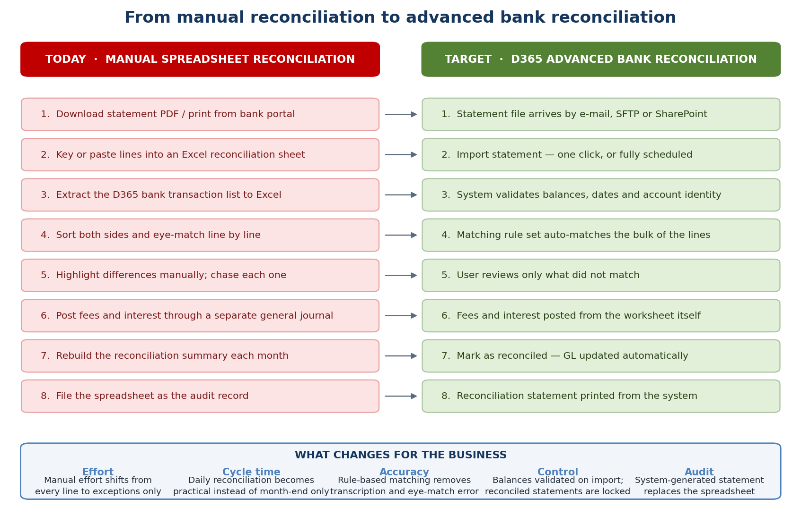
Figure 1 · Manual reconciliation compared with advanced bank reconciliation in D365 F&O
The change is not that the system does the reconciliation for you. It is that the system does the matching for you, so that people spend their time only on the items that genuinely need judgement.
FOR MANAGEMENT · The single most important point Under the new process the user no longer looks at every line. The system pairs off everything that matches the agreed rules and presents only the exceptions. The reconciliation becomes an exception review rather than a full comparison. |
1.4 End-to-end process flow
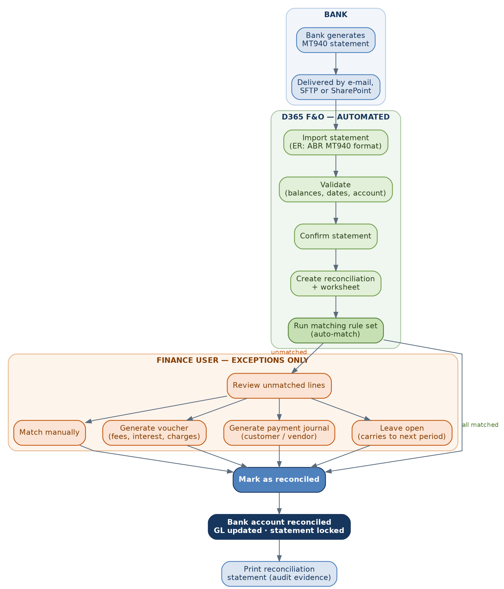
Figure 2 · Advanced bank reconciliation — end-to-end process flow
Reading the diagram from the top: the bank produces an MT940 statement file and delivers it. D365 imports the file, checks that it is internally consistent and belongs to the right bank account, and creates a reconciliation worksheet. The matching rules run automatically. Everything they match is done. Everything they cannot match goes to a finance user, who either matches it manually, posts it, or consciously leaves it open as a timing difference. The user then marks the reconciliation as reconciled, which updates the general ledger and locks the statement.
1.5 Benefits and the effort reduction
Area | Manual process today | With advanced bank reconciliation | Business effect | |
|---|---|---|---|---|
Matching | Every line compared by eye | Rules match the bulk automatically; user reviews exceptions | The largest single saving. Effort scales with exceptions, not with volume. | |
Data capture | Statement re-keyed or pasted into Excel | Statement file imported directly | Removes transcription error entirely. | |
Frequency | Practical only at month-end | Daily import is a ten-minute routine | Problems surface within a day instead of within a month. | |
Bank charges and interest | Posted through a separate general journal | Posted from the reconciliation worksheet itself | Fewer hand-offs; the posting is tied to the statement line that caused it. | |
Customer and vendor payments | Identified manually, then applied in a separate journal | Payment journal generated and settled from the worksheet | Cash application and reconciliation stop being two separate exercises. | |
Balance integrity | Not independently checked | Opening balance, closing balance and line totals validated on import | A tampered or truncated statement file is rejected at the door. | |
Audit evidence | A spreadsheet | System-generated reconciliation statement per account per period | Evidence is reproducible and cannot be edited after the fact. | |
Segregation and lock-down | Spreadsheet can be changed at any time | A reconciled statement is locked; reversal is a tracked, permissioned action | A real control rather than a stated one. | |
NOTE · On quantifying the saving The realistic saving depends on how well the matching rules are tuned and on how clean the underlying data is. A well-configured account where most payments carry a usable reference will typically auto-match the large majority of lines on the first pass. Accounts dominated by cheques and cash deposits, where the bank narrative carries no reference D365 can key on, will auto-match a smaller proportion. The rules should be reviewed after the first two or three live periods and tightened using what the exceptions actually show. | ||||
1.6 Operating rhythm after go-live
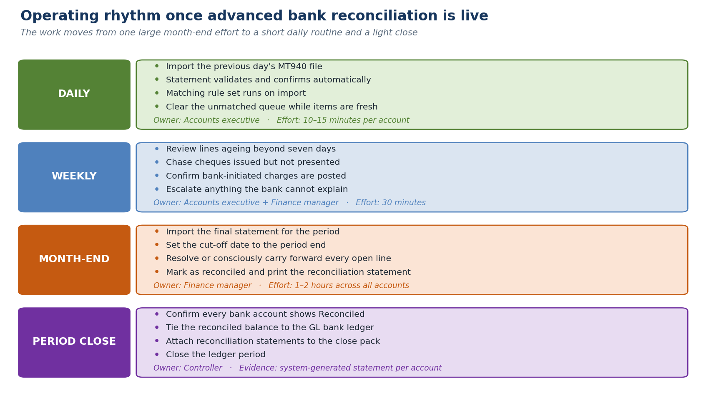
Figure 3 · Daily, weekly, month-end and close activities once the process is live
The shift in rhythm is as valuable as the reduction in effort. A daily import keeps the unmatched queue short and makes each item easy to investigate while it is still recent. Month-end then becomes a confirmation exercise rather than a reconstruction exercise.
1.7 What management should expect to see
Once the process is live, the following are available without asking anyone to prepare them:
Evidence | Where it comes from | What it tells you |
|---|---|---|
Reconciliation status per bank account | Bank reconciliation page — Reconciled flag | Whether each account has actually been reconciled for the period, not whether someone says it has. |
Unmatched line ageing | Bank reconciliation worksheet — unmatched grids | Which differences are outstanding and how long they have been outstanding. |
Reconciliation statement | Print reconciliation statement | The formal reconciliation for the period, generated by the system. |
Bank statement edit history | Bank statement — edit history | Whether an imported statement was altered, by whom and when. |
Reversal audit trail | Reverse reconciliation with reason code and comment | Whether a completed reconciliation was reopened, and the stated justification. |
1.8 What has to be true for this to work
The process depends on a small number of conditions. If any of them is not met, the automation will underperform and users will fall back to manual matching.
Condition | Why it matters | Owner | |
|---|---|---|---|
The bank supplies MT940 reliably and on schedule | No file, no reconciliation. Delivery must be a standing arrangement, not an ad-hoc request. | Finance / bank relationship manager | |
The routing number and account number in the file match the D365 bank account exactly | The import identifies the account from the file. A mismatch causes the statement to be rejected. | Finance + Acxiom | |
Transactions are posted in D365 promptly | The system can only match against what exists. A payment not yet posted cannot be matched. | Accounts team | |
Payments carry a reference the bank passes through | Reference-based rules are far more precise than amount-and-date rules. Where no reference survives, matching accuracy drops. | Accounts team + bank | |
Historic unreconciled transactions are dealt with before go-live | Advanced bank reconciliation cannot be enabled on an account carrying a backlog of old unreconciled items. See section 7. | Finance + Acxiom | |
Someone owns the unmatched queue daily | The benefit comes from the queue staying short. An unowned queue becomes a month-end backlog again. | Finance manager | |
IMPORTANT · The cutover constraint is the one to plan around D365 will not let you switch an account to advanced bank reconciliation while it still carries unreconciled transactions from the old process. There are two ways through this, both covered in section 7: clear the backlog up to an agreed cut-off date, or start advanced reconciliation on a newly created bank account master. This decision needs to be taken early because it affects the go-live date. | |||
2.1 Simple versus advanced bank reconciliation
D365 Finance & Operations offers two reconciliation methods. They are mutually exclusive per bank account.
Simple (account reconciliation) | Advanced bank reconciliation | |
|---|---|---|
Statement input | Balances and cleared items keyed manually | Electronic statement file imported |
Matching | User ticks each cleared transaction | Rule-driven automatic matching, then manual for exceptions |
Statement lines held in the system | No — only the reconciliation result | Yes — every line is stored and auditable |
Balance validation | None | Opening balance, closing balance and line totals validated on import |
Posting from the reconciliation | Not supported | Vouchers and customer/vendor payment journals can be posted from the worksheet |
Reversal | Cancel bank statement reconciliation | Reverse reconciliation, with reason code |
Suitable for | Low-volume accounts with no electronic statement | Any account where the bank supplies an electronic statement |
2.2 Modern bank reconciliation
Modern bank reconciliation is the current generation of the advanced bank reconciliation feature. It is enabled through Feature management and is switched on in the target environment. This handbook documents the process as it behaves with Modern enabled and flags the differences where the classic behaviour differs.
Modern adds the following on top of classic advanced bank reconciliation:
Capability | What it gives you | |
|---|---|---|
Statement validation and confirmation | A two-stage status — Validated, then Confirmed — so a statement is explicitly accepted before it is reconciled. | |
Voucher generation from the worksheet | Bank fees, interest and charges post straight to the general ledger from the statement line, with an offset account, dimensions and tax group. | |
Customer and vendor payment journals from the worksheet | Receipts and payments on the statement can be posted as payment journals and settled against open invoices without leaving the reconciliation. | |
Additional matching rule actions | Settle customer invoice, Generate customer payment, Generate vendor payment, Generate voucher, Clear reversal statement lines, Clear reversal company transaction. | |
Reverse reconciliation | A completed reconciliation can be reopened, with a reason code and comment recorded. | |
Mark as reconciled in batch | Large reconciliations can be completed as a background job. | |
Preview before posting | From version 10.0.46, matching rule results can be routed to a Pending review tab for approval before journals and vouchers are posted. | |
IMPORTANT · Enable Modern before you accumulate reconciliations Microsoft advises reconciling all existing bank statements that have new lines before turning on Modern bank reconciliation, to avoid problems with reconciliation reversal afterwards. If Modern is to be enabled on any additional legal entity or environment, do it as part of the initial setup rather than mid-stream. | ||
2.3 Supported statement formats
D365 supports three electronic bank statement formats out of the box — ISO 20022 CAMT.053, MT940 and BAI2 — and the framework can be extended to others. This engagement uses MT940, the SWIFT end-of-day customer statement message, because that is what the bank supplies.
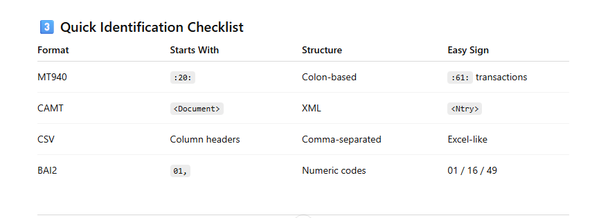
Figure 4 · Quick identification checklist — telling the common statement formats apart
If you are ever handed a statement file and are not certain what it is, open it in a text editor. An MT940 file is plain text, begins with a {1: header block and contains colon-delimited tags such as :20:, :25: and :61:. A CAMT.053 file is XML. A BAI2 file is plain text but comma-delimited and begins with numeric record codes.
2.4 Understanding the MT940 file
A finance user does not need to read MT940 fluently but understanding the handful of tags that drive the import makes troubleshooting far quicker — particularly when a statement fails to import or the balances do not validate.
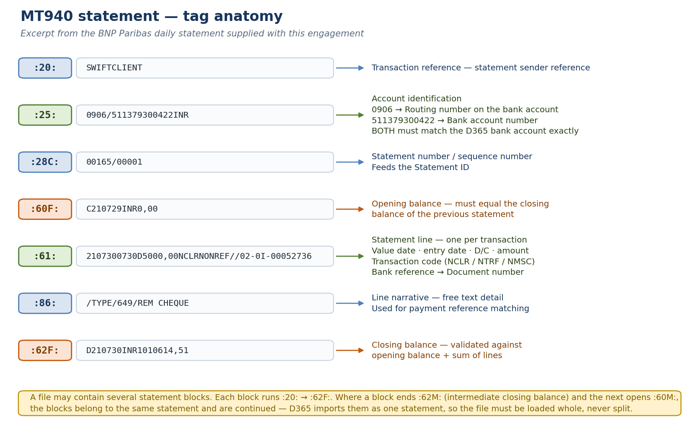
Figure 5 · MT940 tag anatomy, annotated against the statement supplied for this engagement
2.4.1 The tags that matter most
Tag | Name | Why it matters in D365 |
|---|---|---|
:20: | Transaction reference number | Sender's reference for the statement. Informational. |
:25: | Account identification | The critical tag. The value before the separator must equal the Routing number on the D365 bank account; the value after it must equal the Bank account number. This is how the import decides which account the statement belongs to. |
:28C: | Statement / sequence number | Feeds the statement identifier. Used in the duplicate-import check. |
:60F: / :60M: | Opening balance | F = first (true opening balance), M = intermediate. Validated against the closing balance of the previous statement. |
:61: | Statement line | One per transaction. Carries value date, entry date, debit/credit mark, amount, transaction type code and the bank reference that becomes the Document number. |
:86: | Information to account owner | Free-text narrative for the preceding :61: line. Often carries the counterparty name and the payment reference that matching rules can key on. |
:62F: / :62M: | Closing balance | F = final, M = intermediate. Validated against opening balance plus the sum of the lines. |
2.4.2 Account identification — the most common cause of a failed import
The import does not ask you which account a statement belongs to; it works it out from the file. If the values in :25: do not exactly match the bank account master, the statement will not import, or will import against the wrong account.
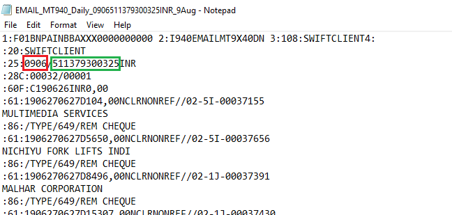
Figure 6 · The :25: tag split into routing number and bank account number
CAUTION · Check this first when an import fails Open the file, find the :25: line, and compare both halves against Cash and bank management > Bank accounts > the account > Routing number and Bank account number. Leading zeros matter. A currency suffix in the file (for example INR at the end) is not part of the account number. |
2.4.3 multi-block statement files
A single MT940 file frequently contains more than one statement block. Each block runs from :20: to a closing balance tag. Where a block closes with :62M: and the next opens with :60M:, the two blocks are continuations of the same statement — the balance is carried forward rather than closed.
The statement supplied with this engagement is exactly this shape: block one closes :62M:D210730INR494364,00 and block two opens :60M:D210730INR494364,00 before closing finally with :62F:.
:28C:00165/00001 <- block 1, sequence 1 :60F:C210729INR0,00 <- true opening balance ... statement lines ... :62M:D210730INR494364,00 <- intermediate closing balance
:28C:00165/00002 <- block 2, sequence 2 :60M:D210730INR494364,00 <- intermediate opening, carried forward ... statement lines ... :62F:D210730INR1010614,51 <- final closing balance | |
IMPORTANT · Never split a multi-block file Importing the blocks separately will break the opening/closing balance validation, because block two's opening balance will not equal the closing balance of the last fully closed statement. Always import the file exactly as the bank delivered it. |
2.4.4 Transaction type codes in the sample file
The three-character code in the :61: line identifies what kind of transaction the bank recorded. These are the codes present in the supplied statement:
Code | Meaning | Typical D365 counterpart |
|---|---|---|
NTRF | Transfer — an electronic credit transfer, incoming or outgoing | Vendor payment, customer receipt, or bank transfer |
NCLR | Cheque / clearing item | Cheque issued to a vendor, presented and cleared |
NMSC | Miscellaneous | Bank charges, interest, or anything the bank has not classified |
These codes are mapped to D365 bank transaction types through Transaction code mapping (section 3.6), which then allows matching rules to insist that a statement line is only matched to a D365 transaction of a compatible type.
This section sets out everything that must be configured before the process can be run, in the order it must be done. Each step depends on the ones before it.
3.1 Configuration dependency map
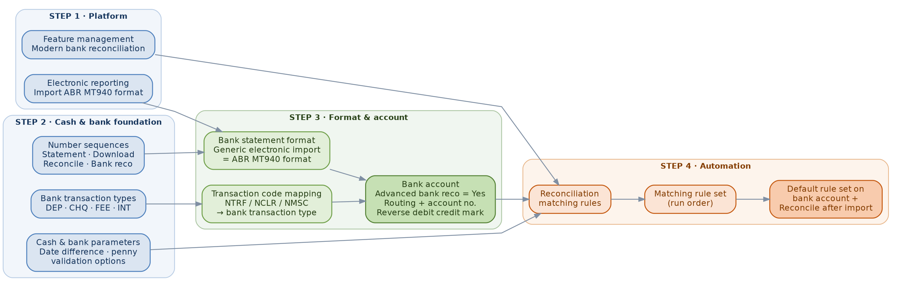
Figure 7 · Configuration in dependency order — each step depends on those to its left
3.1.1 Configuration checklist
# | Configuration | Path | Done |
|---|---|---|---|
1 | Enable Modern bank reconciliation | Workspaces > Feature management | |
2 | Import the ABR MT940 ER configuration | Workspaces > Electronic reporting | |
3 | Number sequences for bank reconciliation | Cash and bank management > Setup > Parameters > Number sequences | |
4 | Bank transaction types | Cash and bank management > Setup > Bank transaction types | |
5 | Cash and bank management parameters | Cash and bank management > Setup > Parameters > Bank reconciliation | |
6 | Bank statement format | Cash and bank management > Setup > Advanced bank reconciliation setup > Bank statement format | |
7 | Transaction code mapping | Cash and bank management > Setup > Transaction code mapping | |
8 | Bank account — enable ABR and set the format | Cash and bank management > Bank accounts > Bank accounts | |
9 | Reconciliation matching rules | Cash and bank management > Setup > Advanced bank reconciliation setup > Reconciliation matching rules | |
10 | Reconciliation matching rule set | Cash and bank management > Setup > Advanced bank reconciliation setup > Reconciliation matching rule sets | |
11 | Default rule set and reconcile after import on the bank account | Cash and bank management > Bank accounts > Bank accounts |
3.2 Enable Modern bank reconciliation
Navigate Workspaces > Feature management
- Open the Feature management workspace.
- Search for Modern bank reconciliation.
- Select the feature and choose Enable now.
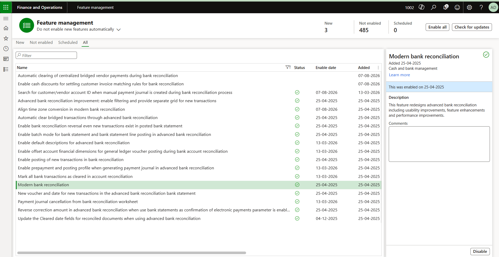
While you are in Feature management, enable the supporting features that this process relies on. Not all will be present on every version; enable those that are.
Feature | Purpose | Required? |
|---|---|---|
Modern bank reconciliation | The core capability this handbook is written against. | Required |
Reverse reconciled advanced bank reconciliation | Allows a completed reconciliation to be reopened. | Required |
Reverse posted bank statement with new transactions | Allows a posted statement to be reversed. | Recommended |
Display vouchers in bank statement | Shows the voucher against the statement line that generated it. | Recommended |
Cancel bank statement reconciliation | The classic reversal route; useful as a fallback. | Recommended |
Revert to simple bank reconciliation from advanced bank reconciliation | Allows an account to be switched back if required. | Recommended |
Payment journal cancellation from bank reconciliation worksheet | Allows an incorrectly posted payment journal to be reversed, unsettling the invoice. | Recommended |
Enable default descriptions for advanced bank reconciliation | Gives meaningful descriptions on automatically posted journals and vouchers. | Optional |
Automatic importing bank statement from SharePoint folder | Needed only if statements will be collected automatically from SharePoint. | Optional |
3.3 Import the Electronic Reporting configuration
Electronic Reporting is the framework that reads the MT940 file and turns it into bank statement data. Microsoft publishes a ready-made configuration; it does not need to be built.
NOTE · This replaces the older XSLT route Earlier documentation for this process described exporting four XSLT and XML resource files from Visual Studio and chaining three transformations inside a Data management processing group. That route is obsolete. Use the Electronic Reporting configuration described below. Nothing needs to be extracted from Visual Studio. |
3.3.1 Import the configuration from the repository
Navigate Workspaces > Electronic reporting
- On the Microsoft configuration provider tile, select Repositories.
- Select Dataverse, then Open. On older builds the repository is named Global — either will work, but Dataverse is the current route.
- If prompted to authorise the connection, select the link in the dialog, complete authentication in the browser tab that opens, close that tab and return to D365, then select OK.
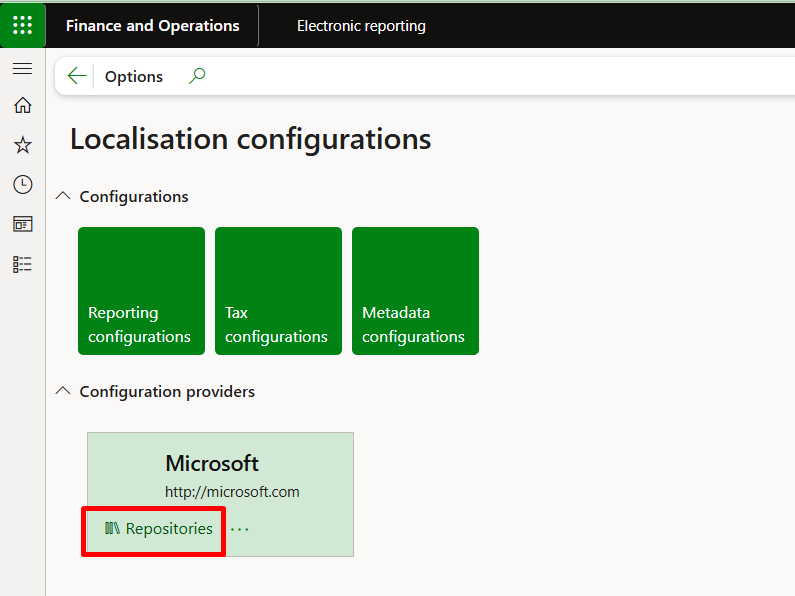
Figure 8 · Electronic reporting workspace — opening the Microsoft repository
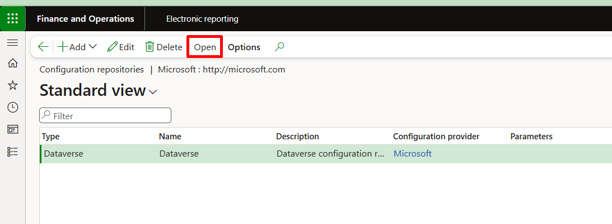
Figure 9 · Selecting the configuration repository
- In the configuration tree, expand Advanced bank reconciliation statement model (shown as Bank statement model on older builds).
- Select ABR MT940 format. On older builds this is named MT940 format.
- On the Versions FastTab, select the latest available version and choose Import.
- Confirm the prompt to import the configuration and all its parent configurations recursively.
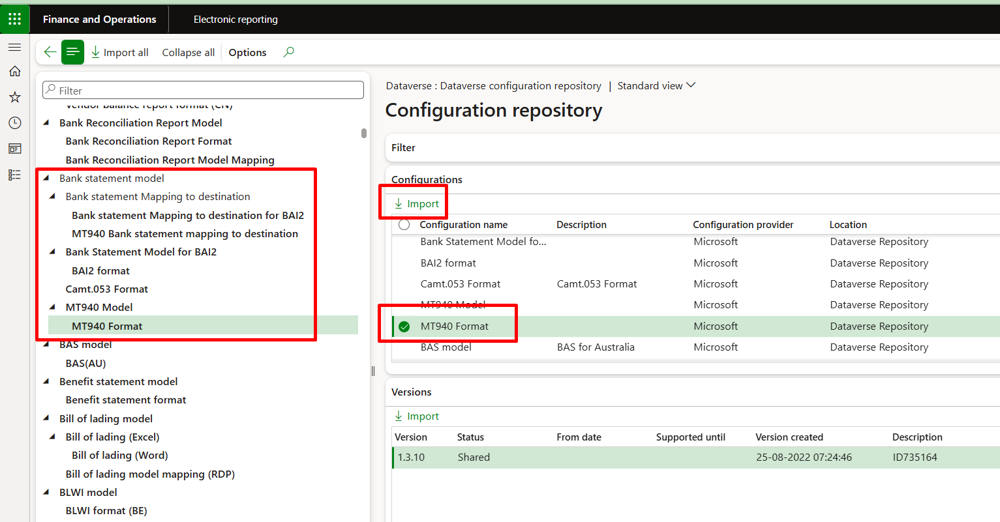
Figure 10 · Selecting the MT940 format in the configuration repository and importing it
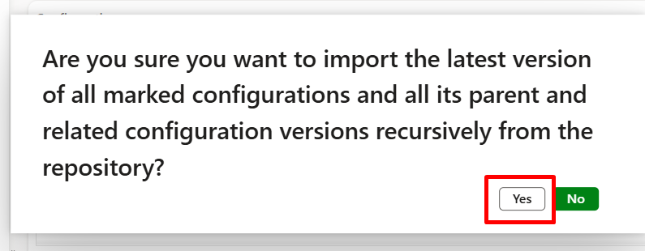
Figure 11 · Confirming the recursive import of the format and its parent configurations
- When the import finishes, go to Reporting configurations and confirm the format appears with no validation errors.
Bank statement format | ER configuration to import |
|---|---|
MT940 | ABR MT940 format |
BAI2 | ABR BAI2 format |
ISO 20022 CAMT.053 | ABR ISO20022/camt053 format |
3.3.2 If the configuration must be customised
A Microsoft-supplied configuration is owned by Microsoft and carries the status Shared; it cannot be edited directly. If a genuine customisation is unavoidable, a separate configuration provider must be created and the configuration derived under it.
- Go to Organization administration > Workspaces > Electronic reporting > Configuration providers and create a provider for Acxiom or the client.
- Return to the Electronic reporting workspace and set that provider Active.
- On the MT940 format, use Exchange > Load from XML file to bring in the amended configuration, or derive a new version from the Microsoft one.
- Change the version status from Draft to Completed so it can be selected in the bank statement format.
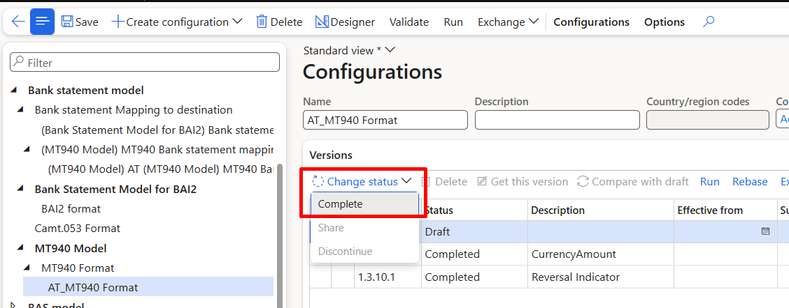
Figure 12 · Changing a derived configuration version from Draft to Completed
CAUTION · Prefer configuration over customisation A derived ER configuration must be re-derived and re-tested every time Microsoft updates the base format. Before customising, confirm the requirement cannot be met with the Reverse debit credit mark parameter on the bank account (section 3.8) or with matching rule design. On this engagement the debit/credit orientation issue — historically fixed by editing the configuration — is resolved by the parameter. See section 6.1. |
3.4 Number sequences
Navigate Cash and bank management > Setup > Cash and bank management parameters > Number sequences
Four references must be allocated a number sequence before a statement can be imported or a reconciliation created.
Reference | Used for | Mandatory |
|---|---|---|
Statement ID | Identifies the imported statement. Required where the file does not carry its own statement identifier. | Yes |
Download ID | Identifies each import run. | Yes |
Reconcile ID | Identifies the reconciliation worksheet. | Yes |
Bank reconciliation | Identifies vouchers created during reconciliation. | Yes |
Bank statement reversal | Required for voucher generation under Modern bank reconciliation. | Yes (Modern) |
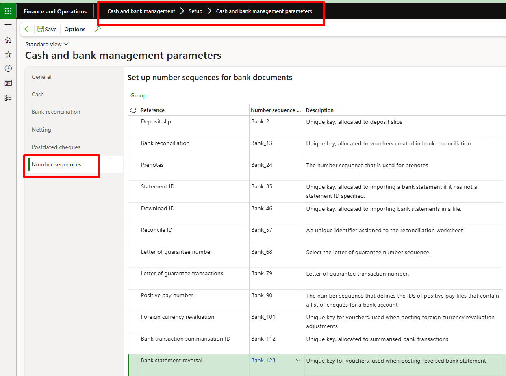
Figure 13 · Number sequence references for bank reconciliation
3.5 Bank transaction types
Navigate Cash and bank management > Setup > Bank transaction types
A bank transaction type classifies the kinds of transaction that hit a bank account. They are used for transaction code mapping, for matching rule criteria, and — importantly — to hold the main account used when the system posts a penny-difference correction.
- Select New to add a line.
- Enter a short unique code in Bank transaction type, for example DEP, CHQ, FEE, INT.
- Enter a descriptive Name.
- Where the type will be used for automatic postings, set the main account.
- Repeat for each type required, then Save.
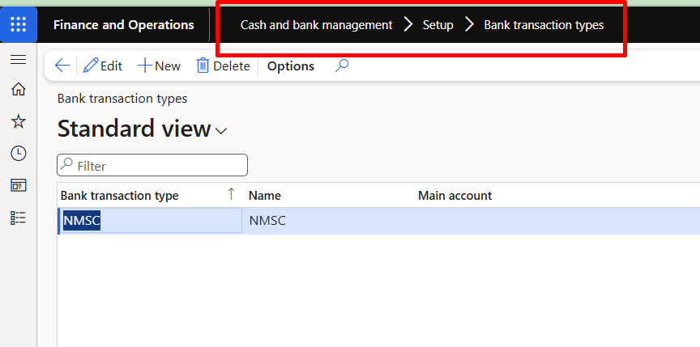
A practical starting set for this engagement:
Code | Name | Maps from MT940 code | Notes |
|---|---|---|---|
DEP | Deposit / receipt | NTRF (credit) | Incoming customer receipts and transfers. |
PAY | Outgoing payment | NTRF (debit) | Vendor payments made by transfer. |
CHQ | Cheque cleared | NCLR | Cheques presented and cleared at the bank. |
FEE | Bank charges | NMSC | Requires a main account for voucher posting. |
INT | Bank interest | NMSC | Requires a main account for voucher posting. |
COR | Reconciliation correction | — | Main account used for penny-difference corrections. |
3.6 Transaction code mapping
Navigate Cash and bank management > Setup > Transaction code mapping
Transaction code mapping links the codes the bank uses in the statement file to the bank transaction types defined above. It is configured separately for each bank account, because different banks use different codes.
- Select New.
- In Bank account, select the account.
- In the Mappings area, select Add and pair each statement transaction code with the corresponding bank transaction type.
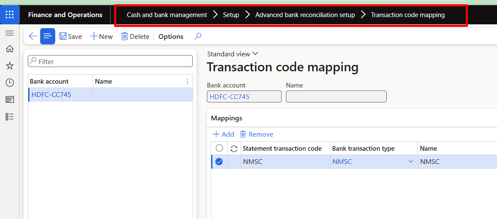
NOTE · Only needed if you intend to match on transaction type Transaction code mapping is not mandatory for the process to run. It becomes mandatory if you enable Validate transaction type mapping in Cash and bank management parameters, or if any matching rule uses Match transaction type as a criterion. Mapping the codes makes matching noticeably more precise and is recommended. |
3.7 Cash and bank management parameters
Navigate Cash and bank management > Setup > Cash and bank management parameters > Bank reconciliation
These parameters govern matching across all accounts, and they override what individual matching rules specify.
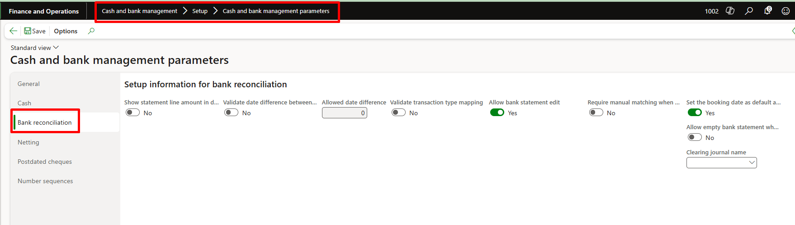
Parameter | Effect | Recommended | |
|---|---|---|---|
Show statement line amount in debit/credit | Shows statement amounts in separate debit and credit columns rather than a single signed amount column. | Yes — far easier to read | |
Allowed date difference | The maximum number of days between a statement line and a D365 transaction that still permits a match. Cannot be exceeded by a matching rule. | Set to reflect real clearing time; start at 3–5 days | |
Validate date difference | Enforces the above. | Yes | |
Validate transaction type mapping | Requires a mapped transaction type before any match, manual or automatic. | Yes, once mapping is complete | |
Require manual matching when rules find multiple documents matching on amount | Where more than one D365 transaction fits, the rule stops rather than matching the first one it finds. | Yes — prevents silent mis-matching | |
Allow bank statement edit | Permits an imported statement to be edited, with the change recorded in edit history. | Yes, but restrict by role | |
Clearing journal name | The journal used when bridged transactions are cleared during reconciliation. | Required if bridging is used | |
GOOD PRACTICE · Turn on "Require manual matching" from day one By default, a matching rule matches to the first D365 transaction that meets its criteria. Where several payments share the same amount and date — which is common with round-sum vendor payments — the rule will pick one arbitrarily and it may be the wrong one. The resulting reconciliation still balances, which is exactly what makes the error hard to find later. Forcing these to manual review costs a few minutes and prevents a class of error that is very difficult to unwind. | |||
3.8 Bank statement format
Navigate Cash and bank management > Setup > Advanced bank reconciliation setup > Bank statement format
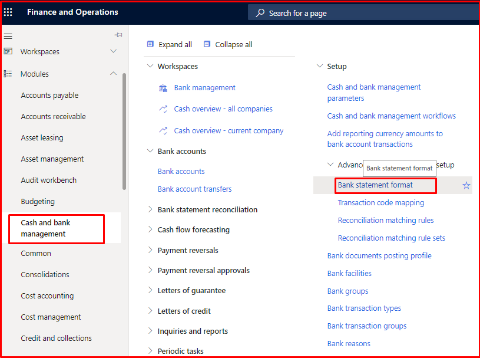
Figure 14 · Navigating to Bank statement format
- Select New.
- In Statement format, enter a short code, for example MT940.
- In Name, enter a description.
- Set File type to txt. For ZIP archives containing several files, the file type must match the files inside the archive; where an archive contains more than one file type, list them separated by a semicolon.
- Select the Generic electronic import format checkbox.
- In Import format configuration, select ABR MT940 format — the ER configuration imported in section 3.3.
- Save.
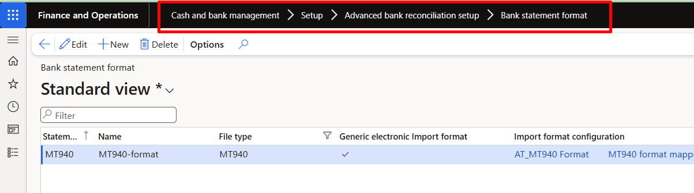
Figure 15 · Bank statement format pointing at the ER import format configuration
IMPORTANT · Generic electronic import format must be ticked If this checkbox is left clear, D365 expects a Data management processing group rather than an ER configuration, and the Import format configuration field will not be available. This is the single most common configuration mistake when moving from the old XSLT route to ER. |
3.9 Bank account setup
Navigate Cash and bank management > Bank accounts > Bank accounts
This is where advanced bank reconciliation is switched on for an individual account, and where most of the behaviour that users will experience is decided.
3.9.1 Confirm the account identification fields first
Before enabling anything, confirm that Routing number and Bank account number on the account exactly match the two halves of the :25: tag in the statement file. See section 2.4.2.
3.9.2 Enable advanced bank reconciliation
- Open the bank account.
- On the Reconciliation FastTab, set Advanced bank reconciliation to Yes.
- Confirm the prompt.
- Set Statement format to the format created in section 3.8.
- Set the remaining fields as described in the table below, then Save.
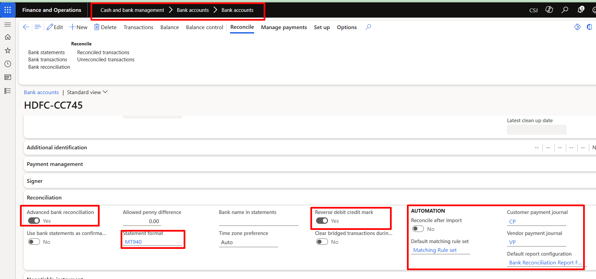
Figure 16 · Bank account Reconciliation FastTab with advanced bank reconciliation enabled
3.9.3 Field reference — Reconciliation FastTab
Field | What it does | Setting for this engagement |
|---|---|---|
Advanced bank reconciliation | Switches the account from simple to advanced reconciliation and unlocks the rest of the tab. | Yes |
Statement format | Determines how statement files for this account are parsed. | MT940 |
Reverse debit credit mark | Flips the debit/credit sign of imported statement amounts, so that the bank's perspective aligns with the ledger's. | Yes — see section 6.1 |
Allowed penny difference | Maximum variance that still permits a match. 0.00 means amounts must agree exactly. | Start at 0.00; raise only if rounding differences are demonstrated |
Bank name in statements | The identifier the bank uses for this account, used to pick the right account out of a multi-account file. | Set where files contain several accounts |
Use bank statements as confirmation of electronic payment | Moves electronic payments from Sent to Received once matched and reconciled. | Only if electronic payment statuses are used |
Time zone preference | Time zone applied to statement timestamps. | Auto |
Clear bridged transactions during reconciliation | Clears bridging entries automatically when the worksheet is marked as reconciled. | Yes if bridging methods of payment are used |
Reconcile after import | Validates the statement, creates the reconciliation and worksheet, and runs the default rule set automatically on import. | Yes once rules are proven |
Default matching rule set | The rule set applied automatically. Set after section 3.11. | The standard rule set |
Default customer payment journal | Journal used when a customer payment is generated from the worksheet. | Required for cash application |
Default vendor payment journal | Journal used when a vendor payment is generated from the worksheet. | Required for cash application |
Default report configuration | ER configuration used for the printed reconciliation statement. | Leave default unless a bespoke layout is required |
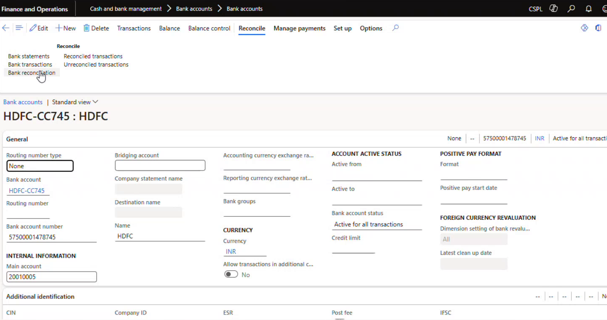
Figure 17 · Bank account configured for advanced bank reconciliation in the target environment
CAUTION · The journal names cannot have an approval workflow D365 will not generate customer or vendor payment journals from the reconciliation worksheet if the nominated journal name has an approval workflow attached. If your payment journals are workflow-controlled, create separate journal names for reconciliation use and control them through security instead. |
3.10 Reconciliation matching rules
Navigate Cash and bank management > Setup > Advanced bank reconciliation setup > Reconciliation matching rules
Matching rules are where the value of this process is realised. A rule is a set of criteria that filters bank statement lines and D365 bank transactions, and an action that says what to do when they meet.
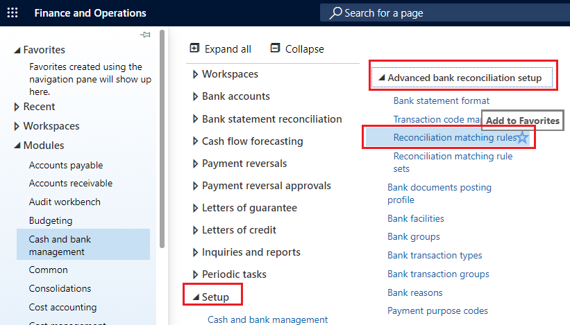
Figure 18 · Navigating to Reconciliation matching rules
3.10.1 Creating a rule
- Select New and enter a Matching rule code and Name.
- In the Action field group, choose what the rule should do.
- In Matching type, choose how records pair — one-to-one, one-to-many, many-to-one or many-to-many.
- Complete the step Fast Tabs that appear for the chosen action.
- Save, then Activate. A rule that is not activated will not run.
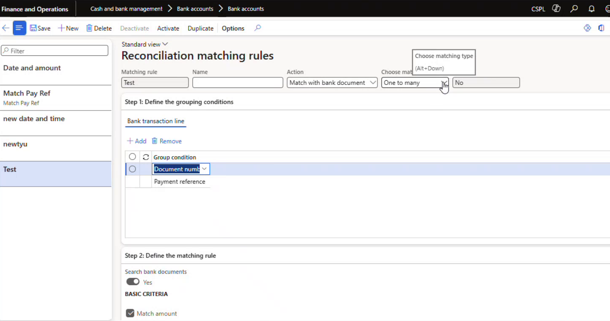
Figure 19 · Reconciliation matching rule — grouping conditions and matching type, target environment
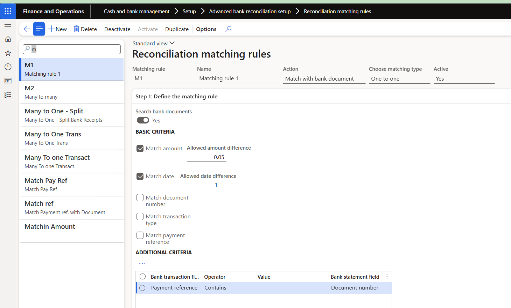
Figure 20 · Matching rule criteria — amount, date, document number and payment reference
3.10.2 Available actions
Action | Availability | What it does |
|---|---|---|
Match with bank document | All versions | Pairs statement lines with D365 bank transactions. The workhorse rule. |
Mark new transactions | Classic only | Flags statement lines with no matching document as new, for later posting from the statement page. |
Generate voucher | Modern | Posts non-payment lines — bank interest, fees — directly to the general ledger. |
Generate customer payment | Modern | Posts a customer payment journal from an incoming statement line, without settling invoices. |
Generate vendor payment | Modern | Posts a vendor payment journal from an outgoing statement line. |
Settle customer invoice | Modern | Posts a customer payment journal and settles it against the matched open invoice. |
Clear reversal statement lines | All (enhanced in Modern) | Clears offsetting statement lines caused by a bank error, without matching to a D365 transaction. |
Clear reversal company transaction | Modern | Clears reversed company payment journals that have no counterpart at the bank. Selected transactions must net to zero. |
3.10.3 A recommended rule set for MT940
Rules should run from the most precise to the least precise, so that a confident match is taken before a looser rule has the chance to make a weaker one. The following sequence is a sound starting point; tune it after the first few live periods.
Seq | Rule | Action | Criteria | Why here | |
|---|---|---|---|---|---|
1 | Clear bank reversals | Clear reversal statement lines | Reversal = Yes; document number and payment reference match the original line | Remove self-cancelling noise before anything else runs. | |
2 | Match on reference | Match with bank document | Payment reference equals document number; match amount | The most reliable pairing available. Take it first. | |
3 | Match on document number | Match with bank document | Document number; match amount | Catches cheques, where the cheque number is the reliable key. | |
4 | Match on amount and date | Match with bank document | Match amount; match date within the allowed difference; match transaction type | The general fallback. Constrain it with transaction type so a receipt cannot match a payment. | |
5 | Post bank charges | Generate voucher | Transaction code mapped to FEE; offset to the bank charges account | Removes routine bank-initiated debits from the exception queue. | |
6 | Post bank interest | Generate voucher | Transaction code mapped to INT; offset to the interest income account | As above for credits. | |
GOOD PRACTICE · Build the rule set incrementally Do not configure all six rules and run them together on the first test. Add one rule at a time, run it against a real statement, and inspect what it matched and — more revealingly — what it matched that it should not have. A rule set built this way is trusted by its users; one that appears fully formed is not. | |||||
3.10.4 Step 1 and Step 2 on a matching rule
Most actions present two or three step Fast Tabs. Their meaning is consistent:
FastTab | Meaning |
|---|---|
Step 1 — define the grouping conditions | Under Modern, how multiple lines are grouped before matching — for example grouping several D365 transactions that share a document number so they can match one statement line. |
Step 1 / 2 — define the matching rule | The criteria that decide whether a statement line and a bank document are the same transaction. Basic criteria cover amount, date, document number, transaction type and payment reference; additional criteria allow field-level comparisons between the statement line and the document. |
Final step — filter which statement lines the rule runs against | Optional. Restricts the rule to a subset of lines, for example only those with a particular transaction code. Use this to keep a voucher-generating rule away from lines it should not touch. |
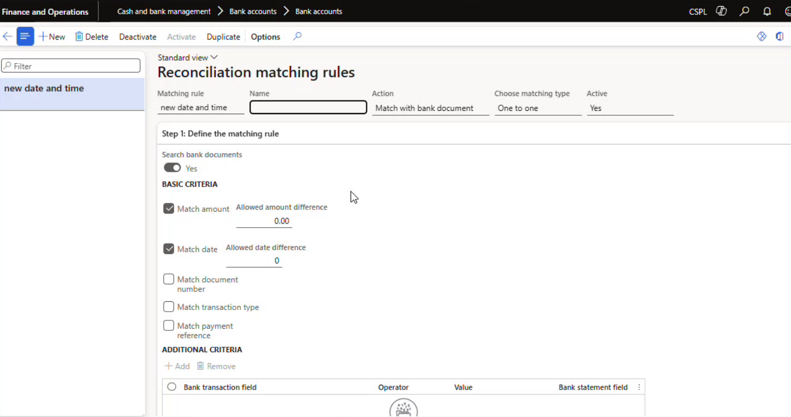
Figure 21 · Matching rule criteria under Modern bank reconciliation
3.11 Matching rule sets and automation
Navigate Cash and bank management > Setup > Advanced bank reconciliation setup > Reconciliation matching rule sets
A rule set groups rules so that the whole sequence runs in a single pass, in the order you specify.
- Select New and enter a Name and Description.
- Add the matching rules in the order they should run. The set executes top to bottom.
- Save.
A rule set can then be applied in three ways:
How it runs | Where it is set | When to use it | |
|---|---|---|---|
On demand | Bank reconciliation worksheet > Run matching rules | During testing, and whenever a user wants to re-run rules after posting something new. | |
As the account default | Bank account > Reconciliation > Default matching rule set | Always set this, so users do not have to choose a rule set each time. | |
Automatically on import | Bank account > Reconciliation > Reconcile after import = Yes | Once rules are proven. The statement is validated, the worksheet created and the rules run without user action. | |
IMPORTANT · Do not enable Reconcile after import until the rules are trusted Automatic reconciliation on import is the end state, not the starting state. Run rules on demand until you have seen several real statements process correctly, then switch the automation on. It is much easier to build confidence in a rule you chose to run than in one that ran before you saw the data. | |||
This section is the operating procedure. It assumes the configuration in section 3 is complete and is written to be followed step by step.
4.1 The process at a glance
Step | Action | Page | Result | |
|---|---|---|---|---|
1 | Import the statement | Bank statements | Statement created with status Open | |
2 | Validate and confirm | Bank statements | Status moves to Validated, then Confirmed | |
3 | Create the reconciliation | Bank reconciliation | A reconciliation record with a cut-off date | |
4 | Open the worksheet | Bank reconciliation worksheet | Statement lines and D365 transactions side by side | |
5 | Run matching rules | Bank reconciliation worksheet | Matched lines move to Matched transactions | |
6 | Handle the exceptions | Bank reconciliation worksheet | Every remaining line dispositioned | |
7 | Mark as reconciled | Bank reconciliation worksheet | GL updated, statement locked | |
8 | Print the reconciliation statement | Bank reconciliation | Audit evidence for the period | |
NOTE · Steps 1 to 5 can be fully automated With Reconcile after import set to Yes on the bank account, steps 2 to 5 happen without user action, and with SharePoint import configured even step 1 is automatic. The user then starts at step 6. The steps are documented individually because you need to understand them to troubleshoot, and because they are performed manually during testing. | ||||
4.2 Step 1 — Import the bank statement
Navigate Cash and bank management > Bank statement reconciliation > Bank statements
The same page can be reached from the bank account: select the account, then Reconcile > Bank statements.
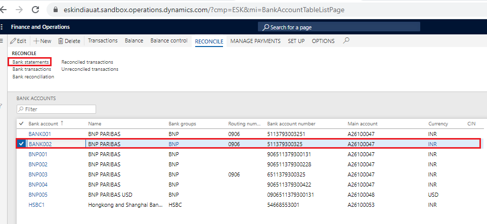
Figure 22 · Reaching Bank statements from the bank account Reconcile tab
- Select Import statement.
- In Bank account, select the account. Statement format fills automatically from the bank account setup.
- Leave Import statement for multiple bank accounts in all legal entities set to No for a single-account file.
- Select Browse, choose the statement file, and select Upload.
- Select OK.
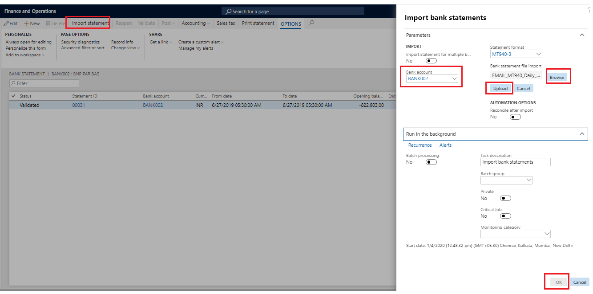
Figure 23 · The Import bank statements dialog
4.2.1 Importing several statements at once
To import a file containing several accounts — including accounts in different legal entities — set Import statement for multiple bank accounts in all legal entities to Yes and upload the file. To import several files at once, combine them into a single ZIP archive and upload that; the import recognises the archive and processes each file inside it.
NOTE · Legal entity access The user performing the import must have access to a legal entity in order to import statements for that entity's bank accounts. If some statements in a multi-account file import and others do not, check the importing user's legal entity access before investigating the file. |
4.2.2 Confirming the import succeeded
A successful import produces a confirmation message and a new statement with status Open. If the import fails, the error is in the Data management job log rather than on screen.
Navigate Workspaces > Data management > Job history > select the job > Execution details > View execution log
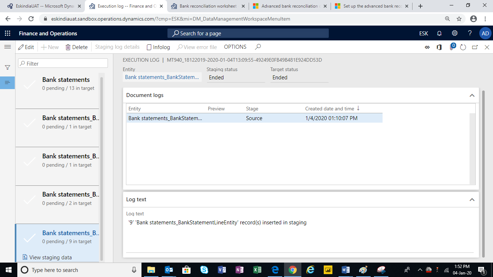
Figure 24 · Data management job history — locating the import job
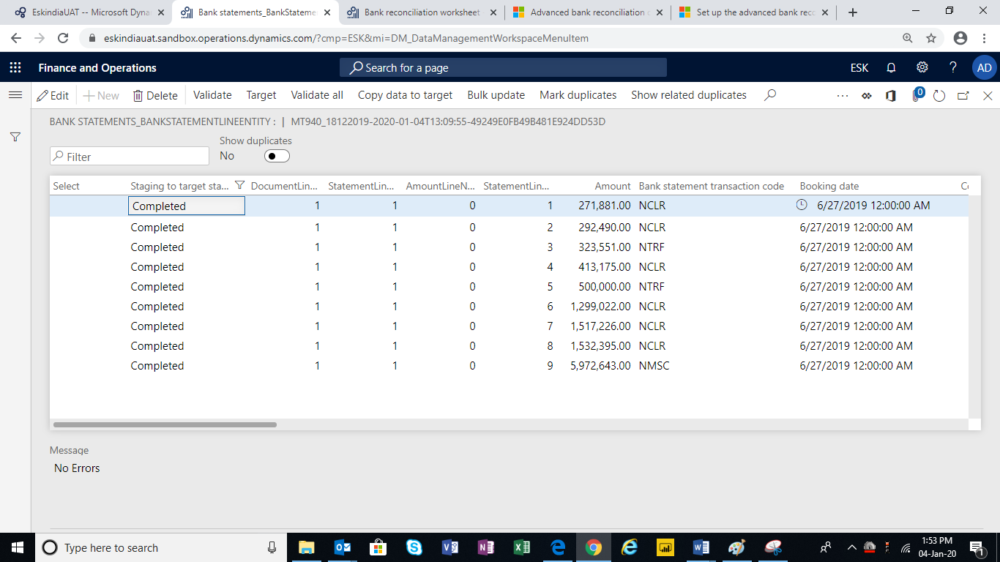
Figure 25 · Execution log showing the detail behind a failed import
4.2.3 Duplicate protection
D365 checks the combination of account number, statement ID, from-date and to-date. If all four match an existing statement, the file is treated as a duplicate and is not imported. This is deliberate and prevents the same statement being reconciled twice.
4.3 Step 2 — Validate and confirm
Validation is the system's check that the statement is internally consistent and belongs where it says it does. A statement must be validated before it can be reconciled.
- On the Bank statements page, select the statement.
- Select Validate.
- Once validation passes, select Confirm to move the statement to Confirmed.
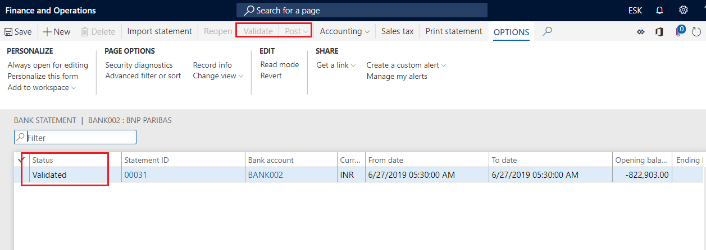
Figure 26 · Validating an imported bank statement
4.3.1 What validation actually checks
Check | What fails it | How to fix it |
|---|---|---|
The statement matches the selected bank account | The :25: values do not match the account master | Correct the routing number or account number on the bank account — see section 2.4.2 |
Statement currency matches account currency | An INR statement imported against a USD account | Import against the correct account |
Opening balance equals the previous statement's closing balance | A statement has been skipped, or a multi-block file was split | Import the missing statement first, or re-import the file whole |
Dates do not overlap another statement for the account | The same period has already been imported | Check whether the earlier statement should be removed — see section 6.2 |
Line dates fall between the statement from-date and to-date | A malformed file, or a line carrying a value date outside the period | Refer back to the bank |
Opening balance plus line amounts equals the closing balance | The file is truncated or has been edited | Re-obtain the file from the bank; do not patch it by hand |
4.3.2 Reopening a validated statement
A statement can be returned from Validated to Open with the Re-open button, for example if a correction is needed before reconciliation begins.
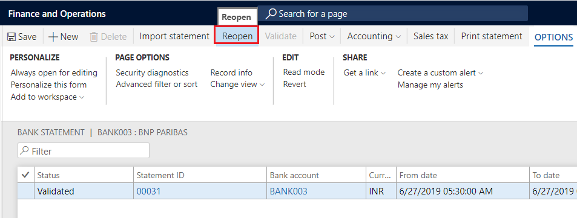
Figure 27 · Re-open returns a validated statement to Open status
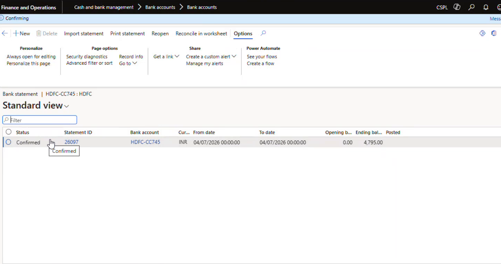
Figure 28 · Bank statements list showing a confirmed statement in the target environment
4.3.3 Reviewing the statement lines
Select the statement ID to open the statement and review its lines before reconciling. This is worth doing on the first few statements, to confirm that amounts are landing on the expected side and that the narrative from :86: is arriving intact.
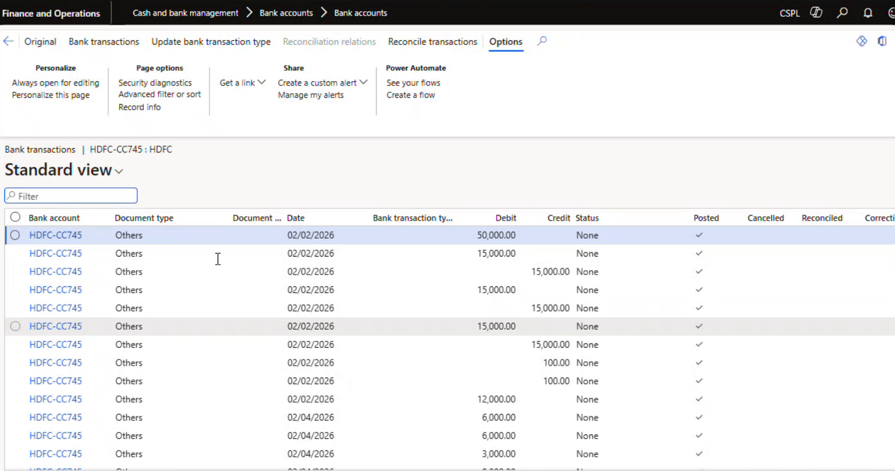
Figure 29 · Imported bank statement lines
4.4 Step 3 — Create the reconciliation
Navigate Cash and bank management > Bank statement reconciliation > Bank reconciliation
The same page is available from the bank account under Reconcile > Bank reconciliation.
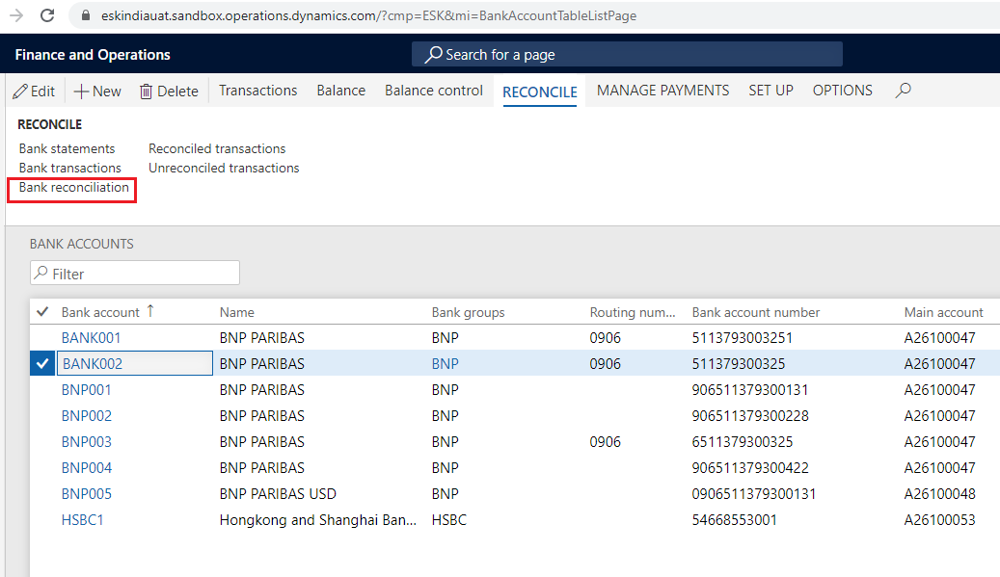
Figure 30 · Reaching Bank reconciliation from the bank account
- Select New.
- Select the bank account.
- Check the Cut-off date. It defaults to the current system date.
- The remaining header detail is taken from the statement automatically.
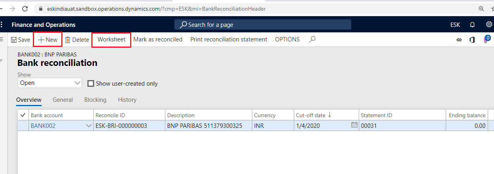
Figure 31 · Creating a new bank reconciliation
IMPORTANT · The cut-off date decides what you are reconciling The cut-off date determines which statement lines and which D365 bank transactions are pulled onto the worksheet. At month-end, set it to the period end date, not to today — otherwise transactions from the new period will appear on the worksheet and the reconciliation will not agree to the period-end ledger balance. |
NOTE · One open reconciliation per account A bank account can have only one open reconciliation at a time. If New does not behave as expected, check whether an earlier reconciliation is still open and either complete it or remove it. |
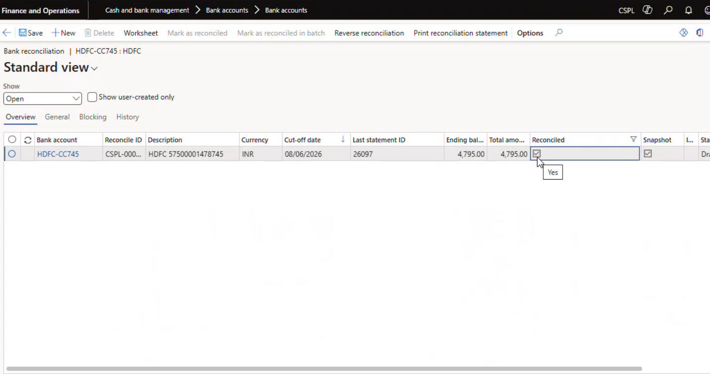
Figure 32 · Bank reconciliation list — draft reconciliation awaiting the worksheet
4.5 Step 4 — Open the worksheet
Select the reconciliation and choose Worksheet. The worksheet is where the reconciliation is actually performed.
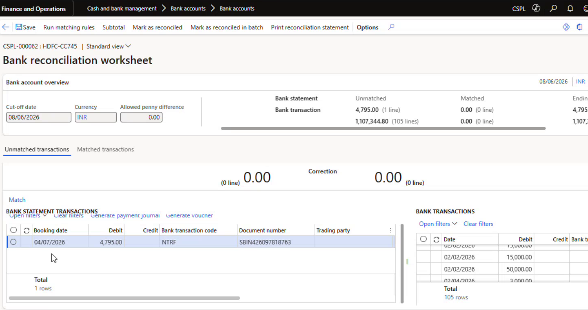
Figure 33 · Bank reconciliation worksheet under Modern bank reconciliation
4.5.1 Reading the worksheet
Area | What it shows |
|---|---|
Bank account overview | Cut-off date, currency and allowed penny difference, with matched, unmatched and ending balance totals for both the statement and the D365 side. These totals are the fastest way to see how much work is left. |
Unmatched transactions tab | Two grids: bank statement lines on the left, D365 bank transactions on the right. Everything still to be dealt with. |
Matched transactions tab | The same two grids for items already paired off, with an Unmatch action. |
Pending review tab | Present only where the preview feature is enabled. Holds rule results awaiting approval before posting. |
Bank statement transaction details | Detail for the selected unmatched statement line, including the narrative from :86:. The first place to look when deciding what an unexplained line is. |
Under classic advanced bank reconciliation, the layout differs: four grids are shown on a single page rather than two tabs, with unmatched above and matched below.
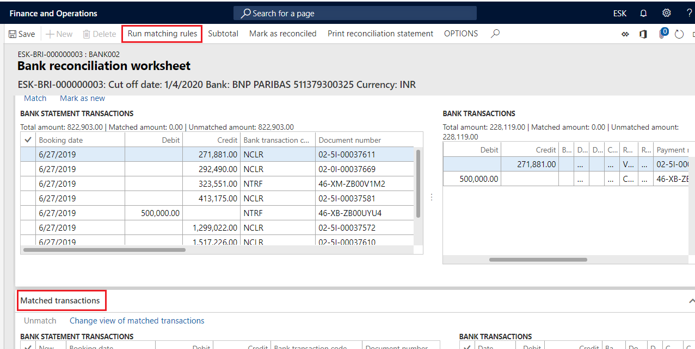
Figure 34 · The classic four-grid worksheet layout, for comparison
4.6 Step 5 — Run the matching rules
- Select Run matching rules.
- Choose the Matching rule set — or a single Matching rule when testing.
- For a large statement, set the job to run in the background.
- Select OK.
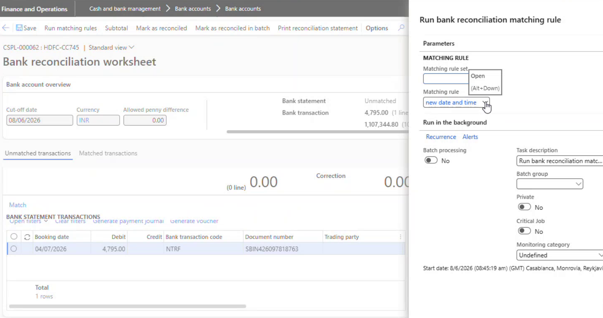
Figure 35 · Selecting a matching rule set to run against the worksheet
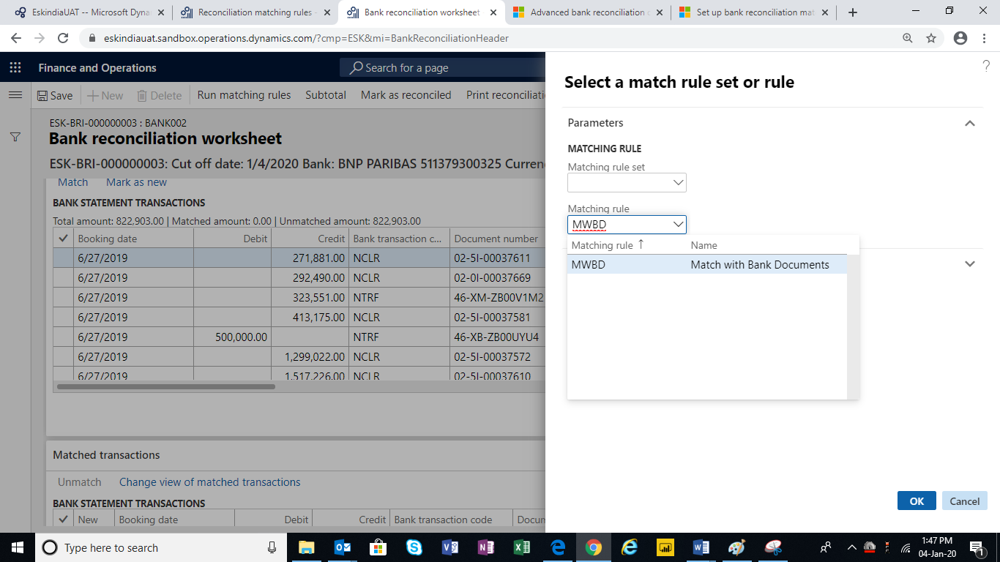
Figure 36 · Choosing a matching rule set or an individual rule
When the run completes, everything the rules matched moves to Matched transactions and the unmatched totals fall. Rules can be run repeatedly — after posting a missing transaction, run them again and the new transaction will be picked up.
4.7 Step 6 — Handle the exceptions
What remains on the Unmatched transactions tab is the real work. Every line must be dispositioned in one of five ways.
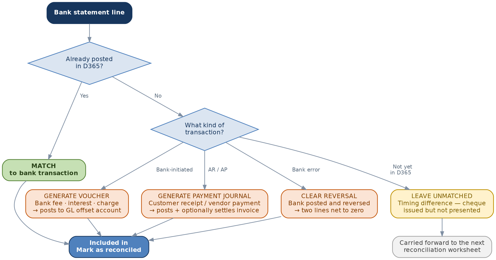
Figure 37 · Deciding what to do with an unmatched bank statement line
4.7.1 Match manually
Where the transaction is posted in D365, but no rule caught it — often because a reference was mistyped or a date fell outside the allowed difference:
- Select the line or lines in the Bank statement transactions grid.
- Select the corresponding line or lines in the Bank transactions grid.
- Select Match.
One-to-one, many-to-one and many-to-many matches are all supported, so a single bank credit covering several invoices can be matched to all of them at once. Manual matches must still respect the allowed date difference and transaction type mapping set in Cash and bank management parameters.
GOOD PRACTICE · Feed manual matches back into the rules Every manual match is a rule that did not fire. Keep a note of why during the first few periods. If the same pattern recurs — a particular payment type, a particular counterparty — it is usually a rule that needs adjusting rather than a permanent manual step. |
4.7.2 Penny differences
Where a statement line and a D365 transaction differ by no more than the Allowed penny difference set on the bank account, they can still be matched. The variance appears in the Correction amount field on the matched D365 transaction and is posted automatically to the main account defined on the associated bank transaction type when the worksheet is marked as reconciled.
NOTE · Not available for cheques and deposits Penny-difference corrections are not supported for the Check and Deposit document types. Differences on these must be resolved properly rather than absorbed. |
4.7.3 Generate a voucher — bank fees, interest and charges
For bank-initiated items that are not in D365 at all and do not relate to a customer or vendor:
- On the Unmatched transactions tab, select the statement lines to post.
- Select Generate voucher.
- Complete the dialog: Accounting date, Bank transaction type, offset account, Description, and where applicable Sales tax group, Item sales tax group, financial dimensions and financial tags.
- Select OK.
The voucher posts to the general ledger, and the statement line moves to Matched transactions. This replaces the older "mark as new, then post from the statement page" route and, importantly, allows the accounting date to be controlled.
4.7.4 Generate a payment journal — customer receipts and vendor payments
For receipts and payments visible on the statement that have not yet been posted in D365:
- On the Unmatched transactions tab, select the statement lines.
- Select Generate payment journal.
- Set Payment type (customer or vendor), the Customer account or Vendor account, Method of payment, accounting date, Bank transaction type, and any financial dimensions or financial tags.
- Select Generate payment to post the journal without settling, or Settle transactions to post and settle against open invoices.
NOTE · Why the invoice field may show an asterisk When a payment journal generated this way is settled against several invoices, the Invoice field on the journal line may be blank or show an asterisk rather than a single invoice number. This differs from a manually created payment journal but is expected behaviour — all settlements are recorded correctly even though individual invoice references are not shown on the line. |
4.7.5 Clear bank reversals
Where the bank has posted a transaction and then backed it out, two statement lines exist with opposite amounts, and one is flagged as a reversal. These can be matched to each other without involving any D365 transaction — select both and match or let the Clear reversal statement lines rule handle them automatically.
The mirror case — a company payment journal reversed in D365 with no counterpart at the bank — is handled by the Clear reversal company transaction rule. The selected transactions must net to zero.
4.7.6 Leave the line unmatched
Not every difference is an error. A cheque issued but not yet presented, or a deposit in transit, is a genuine timing difference and should remain unmatched. D365 allows a reconciliation to be marked as reconciled with unmatched lines still present; those lines carry forward automatically to the next reconciliation worksheet.
IMPORTANT · Carried forward is not the same as resolved Lines that carry forward will keep carrying forward until someone deals with them. Review the age of unmatched lines every week. An item still unmatched after a month is not a timing difference — it is an unresolved problem. |
4.7.7 Unmatching
Where something has been matched incorrectly, select the matched statement line and choose Unmatch. All associated transactions return to the unmatched grids and the totals update. This is possible at any time up to the point the worksheet is marked as reconciled.
4.8 Step 7 — Mark as reconciled
Once every line has been dispositioned, complete the reconciliation.
- Confirm the unmatched totals reflect only genuine timing differences.
- Select Mark as reconciled. For a very large reconciliation, use Mark as reconciled in batch.
- Confirm the prompt.
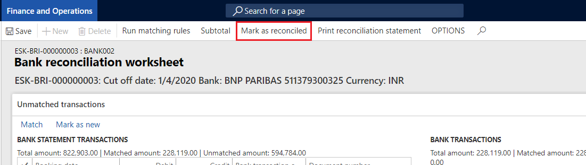
Figure 45 · Marking the reconciliation worksheet as reconciled
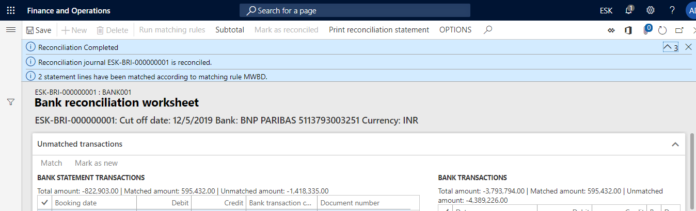
Figure 46 · Confirmation that the reconciliation has been completed
Marking as reconciled posts any penny-difference corrections using the accounts defined on the bank transaction type, clears bridged transactions if that option is enabled on the account, and sets the Reconciled flag on the reconciliation record.
CAUTION · This is the point of no return under classic reconciliation Under classic advanced bank reconciliation, a reconciliation that has been marked as reconciled cannot be undone — it is no longer editable, and no further updates can be made to it. Under Modern bank reconciliation the Reverse reconciliation action exists, but it is a tracked, exceptional operation and reconciliations must be reversed in strict reverse chronological order. Check the worksheet before confirming. |
4.9 Step 8 — Print the reconciliation statement
Select Print reconciliation statement from the bank reconciliation. This is the formal, system-generated reconciliation for the period and should be attached to the period close pack as evidence.
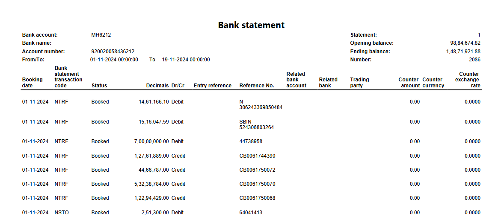
Figure 47 · The printed bank statement / reconciliation output
FOR MANAGEMENT · What replaces the spreadsheet This report, produced by the system from the reconciled data, is what replaces the manually maintained reconciliation workbook. It cannot be edited after the fact, it is reproducible on demand, and it is tied to a specific reconciliation record with its own audit trail. |
Mistakes happen: a line is matched to the wrong transaction, a voucher posts to the wrong account, or a statement is imported that should not have been. This section sets out how to unwind each of them, and — critically — in what order.
5.1 Choosing the right correction
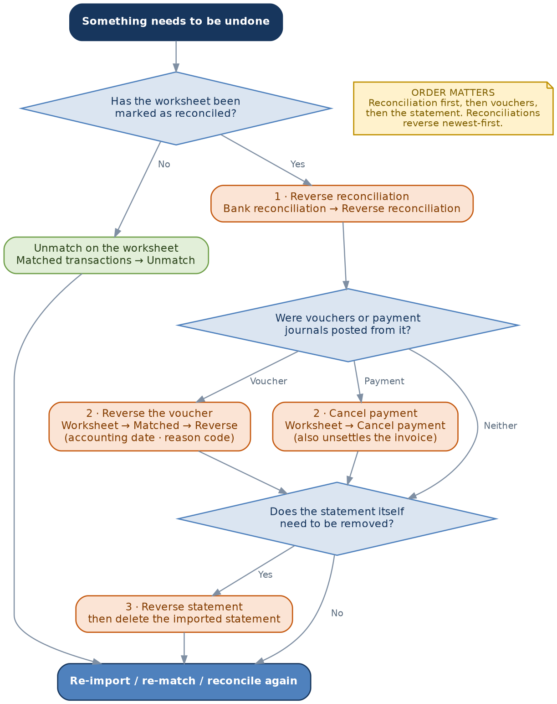
Figure 48 · Deciding how to unwind a reconciliation
CAUTION · Order matters and cannot be shortcut Reverse the reconciliation first, then any vouchers or payment journals it produced, then the posted statement, and only then remove the imported statement. Attempting these out of order will either be blocked or will leave orphaned postings. Where several reconciliations must be unwound, they must be reversed in reverse chronological order, starting with the most recent. |
5.2 Before the worksheet is reconciled — Unmatch
While the worksheet is still open, use Unmatch on the Matched transactions tab. Nothing has posted, so nothing needs reversing. This is always the preferred correction and is why the worksheet should be reviewed carefully before Mark as reconciled is selected.
5.3 Reverse a completed reconciliation
Available under Modern bank reconciliation, and under classic once the Reverse reconciled advanced bank reconciliation feature is enabled.
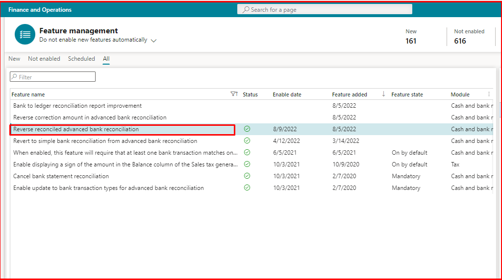
Figure 49 · Enabling Reverse reconciled advanced bank reconciliation in Feature management
Navigate Cash and bank management > Bank statement reconciliation > Bank reconciliation
- Filter the view to show reconciled worksheets.
- Select the reconciled worksheet — it must be the most recent one for the account.
- Select Reverse reconciliation, then Yes. Alternatively, open the Worksheet and select Reverse reconciliation there, having first marked the specific transactions to unreconciled.
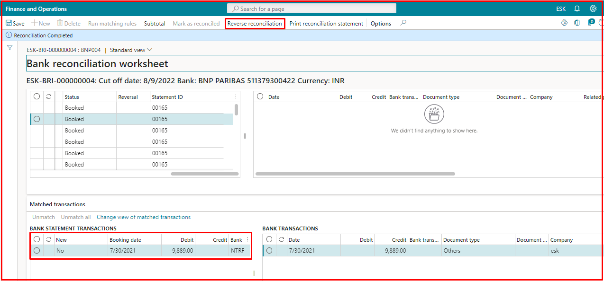
Figure 50 · Marking transactions for reversal on the worksheet
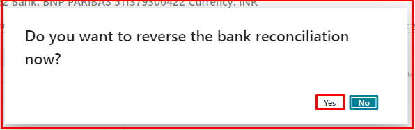
Figure 51 · Confirming the reconciliation reversal
The reconciliation is undone, the statement returns to an unreconciled state, and the lines become available on the worksheet for matching again. The Reconciled flag on the bank reconciliation record reverts to false.
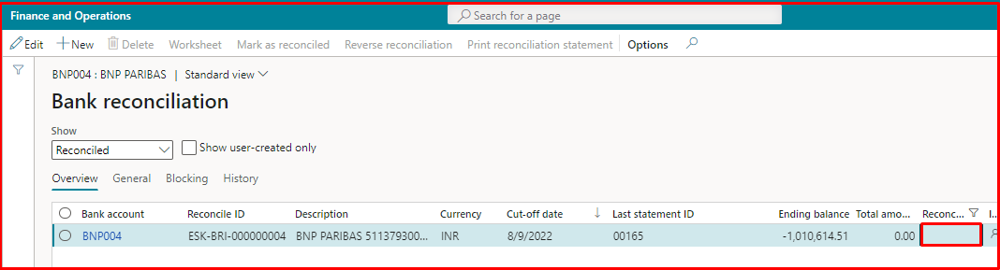
Figure 52 · The reconciliation record showing Reconciled reverted to false
5.4 Reverse a posted voucher
To reverse an individual general ledger voucher — a bank fee posted to the wrong account, for example — rather than the whole statement:
- Open the Bank reconciliation worksheet.
- On the Matched transactions tab, select the statement transactions.
- Select Reverse.
- Confirm the vouchers, set the Accounting date, Reason code and Reason comment, and select Reverse.
GOOD PRACTICE · Use the reason code properly The reason code and comment are the audit trail for the reversal. "Error" tells a reviewer nothing. Record what was wrong and what it should have been — this is the field an auditor will read when asking why a completed reconciliation was reopened. |
5.5 Cancel an incorrectly posted payment journal
Where the Payment journal cancellation from bank reconciliation worksheet feature is enabled, a Cancel payment action is available on the worksheet to reverse a customer or vendor payment journal posted in error. If the payment settled an invoice — whether manually or through a matching rule — the invoice is also unsettled at the point of cancellation.
5.6 Reverse a posted bank statement
Where statement lines were marked as New and posted from the bank statement page, the statement itself must be reversed.
Navigate Cash and bank management > Bank statement reconciliation > Bank statements
- Select the statement that carries the new transactions.
- Select Reverse statement.
- Select the vouchers to reverse and select Reverse.
The Posted flag is removed and the vouchers created for the new transactions are reversed. This requires the Reverse posted bank statement with new transactions feature.
5.7 Cancel bank statement reconciliation — the classic route
This is the older reversal mechanism. It remains useful where Modern reversal is unavailable, and it is the only route that also allows the imported statement itself to be edited.
5.7.1 Prerequisites
- In Feature management, enable Cancel bank statement reconciliation.
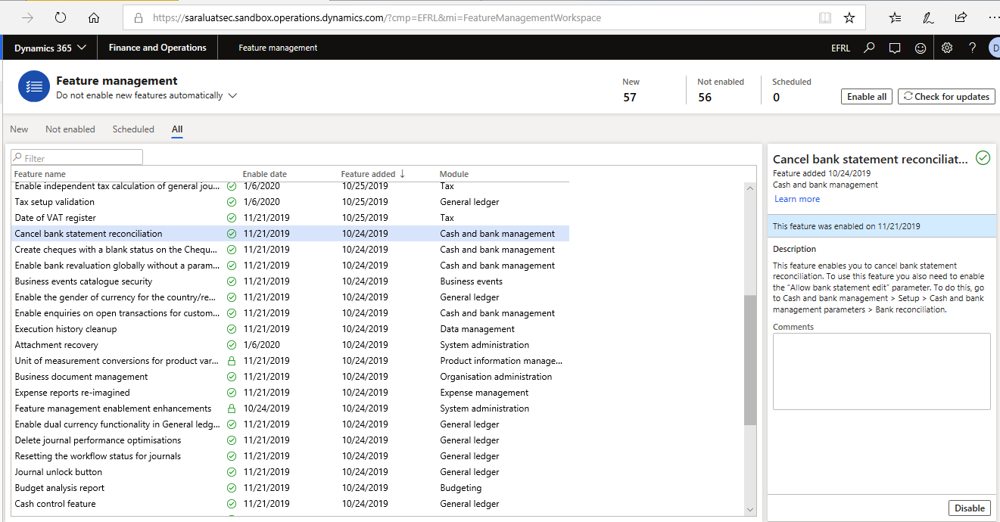
Figure 53 · Enabling Cancel bank statement reconciliation
- In Cash and bank management parameters > Bank reconciliation, enable Allow bank statement edit.
Figure 54 · Enabling Allow bank statement edit in parameters
5.7.2 Editing an imported statement
Navigate Cash and bank management > Bank accounts > select the account > Reconcile > Account reconciliation
- Select the bank statement and choose Edit bank statement.
- Enter the details of the change.
Figure 55 · Editing an imported bank statement
- To review what was altered, select Bank statement edit history.
FOR MANAGEMENT · Edit history is a control, not a formality Allowing imported statements to be edited is a meaningful relaxation of control — it permits the source record to be changed after import. The edit history exists so that any such change is visible, attributed and dated. Restrict this permission to a small number of users and review the edit history as part of the period close. |
5.7.3 Cancelling the reconciliation
- Select the reconciled bank statement and choose Cancel bank reconciliation.
Figure 56 · The Cancel bank reconciliation action
- Complete the Reason code, Comment and Cancellation date, then select OK.
Figure 57 · Cancel bank reconciliation dialog
- A confirmation is shown. The statement list records the cancellation date and a checkbox allows cancelled statements to be filtered.
Figure 58 · Cancellation completed, with the cancellation date recorded
IMPORTANT · Only the most recent reconciliation can be cancelled The Cancel bank reconciliation button is enabled only when the latest reconciled bank statement is selected. To cancel several reconciliations they must be cancelled in reverse chronological order, most recent first. There is no way to reach back and cancel a single older reconciliation in isolation. |
5.8 Revert an account to simple bank reconciliation
An account enabled for advanced bank reconciliation can be returned to simple reconciliation if required.
- In Feature management, enable Revert to simple bank reconciliation from advanced bank reconciliation.
Figure 59 · Enabling the revert feature
- On the bank account, set Advanced bank reconciliation to No.
Figure 60 · Reverting a bank account to simple reconciliation
IMPORTANT · All statements must be closed first Every bank statement for the account must be either reconciled or closed before the account can be reverted. There must be no open bank statements outstanding. |
These are the behaviours that have caused difficulty on this process, drawn from the project history and from UAT. Each is stated with its cause and the agreed way to handle it.
6.1 Debit and credit orientation is inverted
6.1.1 The symptom
A transaction the bank reports as a debit appears in D365 as a debit, when it should appear as a credit — and vice versa. The result is that statement lines and D365 bank transactions sit on opposite sides and will not match.
The cause is a difference in perspective. The bank reports from its own point of view: money leaving your account is a debit to the bank's liability to you. Your ledger records the same movement as a credit to the bank account. MT940 carries the bank's orientation.
Figure 61 · Microsoft LCS issue 3247038 — the behaviour is by design
Microsoft closed this as working as designed, with the observation that the transformation should be customised where a different orientation is required.
Figure 62 · Before correction — statement lines and bank transactions on the same side and unable to match
Figure 63 · After correction — the orientations align and matching succeeds
6.1.2 The resolution
GOOD PRACTICE · Use the parameter, not a code change Both earlier iterations of this process solved this by editing the transformation — the 2020 build patched MT940XML-to-Reconciliation.xslt, and the 2023 build amended the ER model mapping and maintained a derived configuration. Neither is necessary. The Reverse debit credit mark parameter on the bank account Reconciliation FastTab performs exactly this inversion natively. | |||
Approach | How it works | Assessment | |
Reverse debit credit mark parameter | A toggle on the bank account inverts imported statement amounts | Recommended. No code, survives updates, set per account. | |
Amended ER model mapping | A derived configuration inverts the mapping | Must be re-derived and retested on every Microsoft format update. Avoid. | |
Amended XSLT transformation | The legacy transformation is edited directly | Obsolete along with the XSLT route itself. Do not use. | |
Set Reverse debit credit mark to Yes on each bank account using MT940, and confirm the orientation on the first imported statement before building matching rules. It is set per account because it depends on the bank's reporting convention, not on the format alone.
6.2 Overlapping statement dates and multi-date files
Validation rejects a statement whose dates overlap an existing statement for the same account.
Figure 64 · Validation warning where statement periods overlap
Cause | What to do | |
|---|---|---|
The same statement has already been imported | No action needed — the existing statement is the one to reconcile. | |
A multi-block file was split and imported in pieces | Remove the partial statements and re-import the file whole. See section 2.4.3. | |
The bank has reissued a corrected statement for a period already imported | Reverse the reconciliation, reverse and delete the original statement, then import the corrected file. | |
Two daily files genuinely cover overlapping periods | Refer back to the bank. This indicates a problem with how the statements are being generated. | |
KNOWN GAP · Historic issue with multi-date files The 2023 build recorded an unresolved problem uploading files containing multiple dates, raised with Microsoft at the time. Current Microsoft documentation describes multi-statement and multi-account files, including ZIP archives, as fully supported. Confirm behaviour against the current build during testing with a genuine multi-day file before assuming the limitation still applies — the supplied two-day sample is a suitable test case. | ||
6.3 Posting date on new transactions
KNOWN GAP · Distribute amounts always posts with today's date Statement lines marked as New and posted through Distribute amounts take the current system date as their posting date, and it cannot be changed. Posting a period-end bank charge in the following period misstates both periods. | |||
Option | Posting date | Recommendation | |
Generate voucher (Modern) | Accounting date is entered in the dialog | Use this. It is the reason to have Modern enabled. | |
Mark as new + Distribute amounts | System date only | Avoid where the period matters | |
Post through a general journal, then match on the next run | Fully controllable | Acceptable fallback where Modern is unavailable | |
6.4 Transactions posted in D365 before they reach the bank
A reconciliation can only match what exists on both sides. Where a transaction has been posted in D365 but has not yet reached the bank, it will appear as an unmatched D365 bank transaction until the statement carrying it arrives.
This is normal and is the definition of a timing difference — but it was raised during UAT as a concern, so the treatment should be explicit:
Scenario | Treatment | |
|---|---|---|
Cheque issued, not yet presented | Leave unmatched. It carries forward and matches when the bank clears it. This is a genuine reconciling item and should appear as such on the reconciliation statement. | |
Post-dated cheques | Where the journal entry is posted only once the bank has confirmed receipt of funds, no reconciling item arises. Where entries are posted on receipt of the instrument, they will sit unmatched until clearance. | |
Payment posted in D365 that the bank has rejected | The payment must be reversed in D365. It will never appear on a statement. | |
Entry held or blocked at the bank for any reason | Leave unmatched and track it. If the bank ultimately does not process it, reverse the D365 entry. | |
KNOWN GAP · Open item carried forward from UAT A list of scenarios where entries are posted in D365 before bank confirmation — excluding post-dated cheques — was requested during UAT and has not yet been supplied. Until it is, the volume of permanently unmatched D365-side transactions cannot be estimated, and matching rules cannot be tuned for them. See section 7.3. | ||
6.5 Subledger as offset on a new transaction
KNOWN GAP · New transactions cannot offset to a subledger The "post new transactions" route does not support a subledger — customer or vendor — as the offset account. Under Modern bank reconciliation this is no longer a real constraint: use Generate payment journal for anything involving a customer or vendor, and reserve Generate voucher for genuine general ledger postings such as fees and interest. |
6.6 Enabling advanced reconciliation on an account with history
D365 will not enable advanced bank reconciliation on an account that still carries unreconciled transactions from the previous process. This is the principal cutover constraint and is addressed in section 7.
6.7 Issue summary
# | Issue | Status | Resolution |
|---|---|---|---|
1 | Debit/credit orientation inverted on import | Resolved | Set Reverse debit credit mark to Yes on the bank account |
2 | Overlapping statement dates rejected on validation | By design | Import files whole; do not split multi-block files |
3 | Multi-date file upload failure (2023) | To re-test | Re-test on the current build; documented as supported |
4 | Posting date fixed to system date on new transactions | Resolved | Use Generate voucher with an accounting date |
5 | Subledger not supported as offset on new transactions | Resolved | Use Generate payment journal instead |
6 | Cannot enable ABR on an account with unreconciled history | Open — cutover | Cut-off date clearance or new bank account master |
7 | Scenarios where D365 entries precede bank confirmation | Open — ODUS | List awaited from the business |
7.1 The cutover constraint
Advanced bank reconciliation cannot be enabled on a bank account that still carries unreconciled transactions from the manual process. Every existing transaction on the account must be cleared first. Two approaches are available.
Option A — clear to a cut-off date | Option B — new bank account master | ||
|---|---|---|---|
Approach | Agree a cut-off date. Reconcile or clear all transactions up to it using the existing process, then enable advanced reconciliation from the day after. | Create a new bank account master, enable advanced reconciliation on it, and direct new transactions there. The old account is run down and closed. | |
Advantages | One continuous bank account. History and reporting stay in one place. No change to bank details in masters or payment files. | No dependency on clearing the backlog. Go-live date is not held hostage to historic items. | |
Disadvantages | Requires the backlog to be cleared, which may be substantial and may itself hold up go-live. | Two accounts to manage during transition. Vendor and customer bank details, payment formats and integrations may reference the old account. | |
Best when | The backlog is small and can realistically be cleared. | The backlog is large, old, or cannot be cleared without write-offs. | |
IMPORTANT · This decision drives the go-live date Take it early. Under Option A the go-live date depends on how quickly the backlog can be cleared, which is a finance workload question rather than a system one. Under Option B the go-live date is independent of the backlog, but there is integration and master data work to schedule. The decision should be closed before the build is signed off. | |||
7.2 Readiness checklist
7.2.1 Configuration
# | Item | Owner | Status |
|---|---|---|---|
1 | Modern bank reconciliation and supporting features enabled | Acxiom | |
2 | ABR MT940 ER configuration imported and validating without error | Acxiom | |
3 | Number sequences assigned for all bank reconciliation references | Acxiom | |
4 | Bank transaction types created, with main accounts where needed | Finance + Acxiom | |
5 | Cash and bank management parameters set, including manual matching on multiple hits | Finance + Acxiom | |
6 | Bank statement format created with Generic electronic import format ticked | Acxiom | |
7 | Transaction code mapping completed per bank account | Finance + Acxiom | |
8 | Routing number and account number verified against the :25: tag for every account | Finance | |
9 | Reverse debit credit mark set and verified on a real statement | Acxiom | |
10 | Matching rules built, activated and tested individually | Acxiom | |
11 | Matching rule set assembled in the agreed sequence | Acxiom | |
12 | Default customer and vendor payment journals set, without approval workflow | Finance + Acxiom |
7.2.2 Testing
# | Test | Expected result | Status |
|---|---|---|---|
1 | Import the supplied two-day multi-block MT940 file | Imports as a single statement; balances validate | |
2 | Import a statement for the wrong account | Rejected at validation with an account mismatch | |
3 | Import the same statement twice | Second import rejected as a duplicate | |
4 | Run each matching rule individually against a real statement | Matches only what it should; no false positives | |
5 | Run the full rule set | Auto-match rate recorded as a baseline | |
6 | Two D365 transactions with the same amount and date | Routed to manual matching, not matched arbitrarily | |
7 | Generate a voucher for a bank charge with a back-dated accounting date | Posts to the intended period | |
8 | Generate and settle a customer payment from a statement line | Journal posts; invoice settles | |
9 | Mark as reconciled with an unmatched cheque outstanding | Completes; the line carries to the next worksheet | |
10 | Reverse a completed reconciliation with a reason code | Reopens; reason recorded in history | |
11 | Print the reconciliation statement | Agrees to the ledger bank balance at the cut-off date |
7.2.3 Business readiness
# | Item | Owner | Status |
|---|---|---|---|
1 | MT940 delivery agreed with the bank as a standing arrangement | Finance | |
2 | Cutover approach agreed — Option A or Option B | Finance + Acxiom | |
3 | Historic unreconciled items cleared, or new account masters created | Finance | |
4 | Daily ownership of the unmatched queue assigned by name | Finance manager | |
5 | Users trained on exception handling, not just the happy path | Acxiom | |
6 | Security roles set — who may reverse, who may edit a statement | Finance + Acxiom | |
7 | Period close checklist updated to reference the reconciliation statement | Finance |
7.3 Open decisions and unhandled scenarios (ODUS)
The following require a business decision or input before they can be closed. Each carries a risk if left open at go-live.
ID | Item | Required from | Risk if unresolved |
|---|---|---|---|
ODUS-01 | Cutover approach — clear to a cut-off date, or create new bank account masters | Finance | Advanced reconciliation cannot be enabled. Blocks go-live. |
ODUS-02 | List of scenarios where entries are posted in D365 before bank confirmation, excluding post-dated cheques | Finance | Volume of permanently unmatched D365-side items unknown; rules cannot be tuned for them. |
ODUS-03 | Confirmation of which bank accounts are in scope, and whether all use MT940 | Finance | Configuration is per account. An account on a different format needs a different ER configuration. |
ODUS-04 | Whether the bank can deliver to SharePoint or SFTP rather than e-mail | Finance + bank | Determines whether import can be fully automated or stays manual. |
ODUS-05 | Chart of accounts mapping for bank charges, interest and reconciliation corrections | Finance | Voucher-generating rules and penny-difference corrections cannot be configured. |
ODUS-06 | Allowed date difference and allowed penny difference tolerances | Finance | Set too tight, automation underperforms; too loose, mis-matching risk. |
ODUS-07 | Re-test of multi-date file import on the current build | Acxiom | A historic limitation may or may not still apply. |
ODUS-08 | Whether electronic payment status confirmation is in scope | Finance | Determines the "Use bank statements as confirmation of electronic payment" setting. |
7.4 Recommended go-live sequence
Phase | Activity | Exit criterion | |
|---|---|---|---|
Pilot | One bank account, rules run on demand, manual import. Reconcile in parallel with the existing spreadsheet. | Two consecutive periods reconciled with results agreeing to the manual reconciliation. | |
Tune | Review every manual match and every false positive. Adjust rules and tolerances. | Auto-match rate stable and understood; exception categories known. | |
Extend | Roll out to the remaining bank accounts. Retire the parallel spreadsheet. | All in-scope accounts reconciling through D365. | |
Automate | Enable Reconcile after import, then scheduled import from SharePoint or SFTP. | Statements processing without user intervention up to the exception queue. | |
GOOD PRACTICE · Run in parallel for two periods, not one One clean period can be luck. Two consecutive periods reconciling correctly against the existing manual reconciliation is what gives finance the confidence to stop maintaining the spreadsheet — and that confidence is what actually delivers the effort saving. | |||
The tags D365 uses when importing an MT940 statement. Tags not listed are either optional or not consumed by the import.
Tag | Name | Level | Notes |
|---|---|---|---|
:20: | Transaction reference number | Header | Sender's reference for the statement message. |
:25: | Account identification | Header | Routing number and bank account number, separated by /. Must match the D365 bank account. May carry a currency suffix which is not part of the account number. |
:28C: | Statement number / sequence number | Header | Statement number, optionally followed by / and a sequence number for continued blocks. |
:60F: | Opening balance — first | Header | D/C mark, value date (YYMMDD), currency, amount. The true opening balance of a statement. |
:60M: | Opening balance — intermediate | Header | Opening balance of a continuation block, carried forward from the preceding :62M:. |
:61: | Statement line | Line | Value date, entry date, D/C mark, amount, transaction type code, bank reference, account servicing reference. |
:86: | Information to account owner | Line | Free-text narrative for the preceding :61:. Carries counterparty name and payment reference. |
:62F: | Closing balance — final | Footer | Final closing balance. Validated against opening balance plus line amounts. |
:62M: | Closing balance — intermediate | Footer | Closing balance of a block that continues into the next block. |
:64: | Closing available balance | Footer | Optional. Not used by the reconciliation. |
:65: | Forward available balance | Footer | Optional. Not used by the reconciliation. |
A.1 Structure of a :61: statement line
:61:2107300730D5000,00NCLRNONREF//02-0I-00052736 | | || | | | | | || | | +-- Account servicing reference | | || | +-------- Reference for the account owner | | || +--------------- Transaction type code (NCLR) | | |+----------------------- Amount (5000,00 — comma is the decimal) | | +------------------------ Debit/Credit mark (D or C) | +----------------------------- Entry date (MMDD) +----------------------------------- Value date (YYMMDD) |
The statement supplied with this engagement, showing both blocks of a two-day file. Abridged — the full file contains further lines in each block.
{1:F01BNPAINBBAXXX0000000000}{2:I940EMAILMT9X40DN}{3:{108:SWIFTCLIENT}}{4: :20:SWIFTCLIENT :25:0906/511379300422INR :28C:00165/00001 :60F:C210729INR0,00 :61:2107300730D5000,00NCLRNONREF//02-0I-00052736 G STAR SERVICES :86:/TYPE/649/REM CHEQUE :61:2107300730C61040,00NTRFN211210686344607//46-XX-ZB09OLPA SERVOTECH POWER LTD :86:/TYPE/776/RCVD TRF//CODE/IN/000//ORDP/027861900000963/YES BANK/ SERVOTECH POWER LTD//XUTR/N211210686344607/ ... further lines ... :62M:D210730INR494364,00 -}
{1:F01BNPAINBBAXXX0000000000}{2:I940EMAILMT9X40DN}{3:{108:SWIFTCLIENT}}{4: :20:SWIFTCLIENT :25:0906/511379300422INR :28C:00165/00002 :60M:D210730INR494364,00 :61:2107300730C105599,49NTRFN211211582134140//46-XT-ZB09OANA STT GLOBAL DATA CENTRES INDIA P L :86:/TYPE/776/RCVD TRF//CODE/IN/000//ORDP/00030310013273/HDFC BANK/ ... further lines ... :62F:D210730INR1010614,51 } | |
NOTE · Reading the balances Block one opens at :60F:C210729INR0,00 — a credit (positive) balance of zero on 29 July. It closes at :62M:D210730INR494364,00 — a debit (overdrawn) balance of 494,364.00 on 30 July. Block two opens at exactly that figure and closes at :62F:D210730INR1010614,51. The continuity between :62M: and :60M: is what marks these as one statement rather than two. |
A single-page routine for the person who runs the reconciliation. Print and keep alongside the desk procedure.
Step | Check | ✓ | |
|---|---|---|---|
1 | Retrieve yesterday's MT940 file | One file per account. Do not split or edit it. | |
2 | Import statement | Statement created with status Open. | |
3 | Validate | Passes. If not, check :25: against the bank account first. | |
4 | Confirm | Status moves to Confirmed. | |
5 | Open or create the reconciliation | Cut-off date is correct — period end at month-end, not today. | |
6 | Open the worksheet | Note the unmatched totals on both sides. | |
7 | Run matching rules | Unmatched totals fall. Note anything matched that looks wrong. | |
8 | Work the unmatched queue | Every line: match, post, clear as a reversal, or consciously leave open. | |
9 | Check ageing | Nothing unmatched older than a month without an explanation. | |
10 | Mark as reconciled | Only when every line has been dealt with deliberately. | |
11 | Month-end only — print | Reconciliation statement filed with the close pack. |
Symptom | Likely cause | Action |
|---|---|---|
Import fails with no clear error | The detail is in the Data management log, not on screen | Workspaces > Data management > Job history > Execution details > View execution log |
Statement imports against no account | :25: does not match the bank account master | Compare both halves of :25: with Routing number and Bank account number; check leading zeros |
Import format configuration field is not available | Generic electronic import format is not ticked on the bank statement format | Tick it and select the ABR MT940 format |
Validation fails on opening balance | A statement has been skipped, or a multi-block file was split | Import the missing statement, or re-import the file whole |
Validation fails on closing balance | The file is truncated or has been edited | Re-obtain the file from the bank. Do not correct it by hand |
Validation fails on overlapping dates | The period has already been imported | Check for an existing statement covering the same dates |
Statement lines appear on the wrong side | Reverse debit credit mark is not set | Set it to Yes on the bank account and re-import |
Rules match almost nothing | Criteria too tight, or transaction type mapping is enforced but incomplete | Run rules individually to isolate which one fails; check transaction code mapping |
Rules match the wrong transaction | Several D365 transactions share amount and date | Enable Require manual matching when rules find multiple documents matching on amount |
Generate payment journal is unavailable | No default journal on the bank account, or the journal has an approval workflow | Set a default customer/vendor payment journal without workflow |
Generate voucher is unavailable | Modern bank reconciliation is off, or the Bank statement reversal number sequence is missing | Enable the feature and set the number sequence |
Cannot enable advanced bank reconciliation | The account carries unreconciled transactions | Clear to a cut-off date or use a new bank account master — section 7.1 |
Reverse reconciliation is greyed out | The reconciliation is not the most recent for the account | Reverse in reverse chronological order, most recent first |
Posting date on a new transaction is wrong | Distribute amounts always uses the system date | Use Generate voucher with an accounting date instead |
Microsoft Learn
Topic | Link |
|---|---|
Advanced bank reconciliation overview | learn.microsoft.com/en-us/dynamics365/finance/cash-bank-management/advanced-bank-reconciliation-overview |
Advanced bank reconciliation setup process | learn.microsoft.com/en-us/dynamics365/finance/cash-bank-management/configure-advanced-bank-reconciliation |
Set up bank reconciliation matching rules | learn.microsoft.com/en-us/dynamics365/finance/cash-bank-management/set-up-bank-reconciliation-matching-rules |
Set up the import using Electronic reporting | learn.microsoft.com/en-us/dynamics365/finance/accounts-payable/import-bai2-er |
Reconcile bank statements using advanced bank reconciliation | learn.microsoft.com/en-us/dynamics365/finance/cash-bank-management/reconcile-bank-statements-advanced-bank-reconciliation |
Cash application in advanced bank reconciliation | learn.microsoft.com/en-us/dynamics365/finance/cash-bank-management/apply-cash-adv-bank-rec |
Generate a voucher in advanced bank reconciliation | learn.microsoft.com/en-us/dynamics365/finance/cash-bank-management/vouchers-adv-bank-rec |
Clear reversal bank statement transactions | learn.microsoft.com/en-us/dynamics365/finance/cash-bank-management/clear-reverse-bank-stmt-trx |
Clear reversal company transactions | learn.microsoft.com/en-us/dynamics365/finance/cash-bank-management/clear-reverse-comp-trans |
Clear bridging payments | learn.microsoft.com/en-us/dynamics365/finance/cash-bank-management/clear-bridging-pyts-adv-bank-rec |
Reverse a bank reconciliation | learn.microsoft.com/en-us/dynamics365/finance/cash-bank-management/bank-reco-reversal |
Bank journal composite entity upgrade | learn.microsoft.com/en-us/dynamics365/finance/dev-itpro/upgrade-bank-journal-composite-entity |
— End of document —